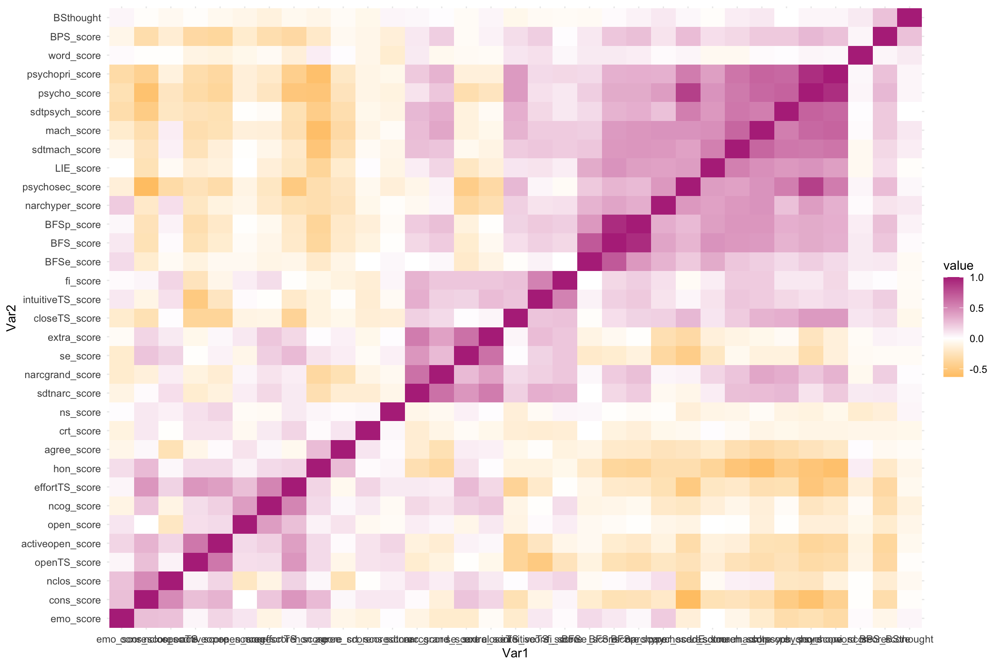

For this portfolio, I will continue to use the dataset from my thesis study. This portfolio will focus on the main analysis for my thesis study’s data, which is mainly correlation analysis. In addition, I would like to create some visualization for presenting the correlations since I have around 30 variables.
##1. BFS and BPS
pcor.test(Thesis_scale$BFS_score, Thesis_scale$BPS_score, Thesis_scale$LIE_score)## estimate p.value statistic n gp Method
## 1 0.1965404 5.436469e-05 4.078555 417 1 pearson##2. BFS and narcissism (short scale)
partial_BFSsdtnarc <- Thesis_scale %>%
select(BFS_score, sdtnarc_score, LIE_score) %>%
drop_na()
pcor.test(partial_BFSsdtnarc$BFS_score, partial_BFSsdtnarc$sdtnarc_score, partial_BFSsdtnarc$LIE_score)## estimate p.value statistic n gp Method
## 1 0.1480524 0.002497544 3.042308 416 1 pearson##3, BFS and machiavellianism (short scale)
pcor.test(Thesis_scale$BFS_score, Thesis_scale$sdtmach_score, Thesis_scale$LIE_score)## estimate p.value statistic n gp Method
## 1 0.2438125 4.802929e-07 5.115216 417 1 pearson##4. BFS and psychopathy (short scale)
pcor.test(Thesis_scale$BFS_score, Thesis_scale$sdtpsych_score, Thesis_scale$LIE_score)## estimate p.value statistic n gp Method
## 1 0.141914 0.003725995 2.917047 417 1 pearson##5. BFS and Narcissistic Personality Inventory
pcor.test(Thesis_scale$BFS_score, Thesis_scale$narc_score, Thesis_scale$LIE_score)## estimate p.value statistic n gp Method
## 1 0.1498232 0.002184556 3.083253 417 1 pearson##6. BFS and Machiavellianism Personality scale
pcor.test(Thesis_scale$BFS_score, Thesis_scale$mach_score, Thesis_scale$LIE_score)## estimate p.value statistic n gp Method
## 1 0.2640329 4.594391e-08 5.569932 417 1 pearson##7. BFS and Levenson Self-Report Psychopathy Scale
pcor.test(Thesis_scale$BFS_score, Thesis_scale$psycho_score, Thesis_scale$LIE_score)## estimate p.value statistic n gp Method
## 1 0.1811911 0.000202992 3.748742 417 1 pearson##7.1
pcor.test(Thesis_scale$BFS_score, Thesis_scale$psychopri_score, Thesis_scale$LIE_score)## estimate p.value statistic n gp Method
## 1 0.166816 0.0006352032 3.442438 417 1 pearsonpartial_BFSpsychosec <- Thesis_scale %>%
select(BFS_score, psychosec_score, LIE_score) %>%
drop_na()
##7.2
pcor.test(partial_BFSpsychosec$BFS_score, partial_BFSpsychosec$psychosec_score, partial_BFSpsychosec$LIE_score)## estimate p.value statistic n gp Method
## 1 0.1453326 0.003002406 2.985203 416 1 pearson##8. BFS and self-esteem
pcor.test(Thesis_scale$BFS_score, Thesis_scale$se_score, Thesis_scale$LIE_score)## estimate p.value statistic n gp Method
## 1 -0.07890241 0.1080624 -1.610447 417 1 pearson##BFS and HEXACO
##9. Honesty-Humility
partial_BFShon<- Thesis_scale %>%
select(BFS_score, hon_score, LIE_score) %>%
drop_na()
pcor.test(partial_BFShon$BFS_score, partial_BFShon$hon_score, partial_BFShon$LIE_score)## estimate p.value statistic n gp Method
## 1 -0.238912 8.48755e-07 -5.00006 416 1 pearson##10. Emotionality
partial_BFSemo <- Thesis_scale %>%
select(BFS_score, emo_score, LIE_score) %>%
drop_na()
pcor.test(partial_BFSemo$BFS_score, partial_BFSemo$emo_score, partial_BFSemo$LIE_score)## estimate p.value statistic n gp Method
## 1 0.09729685 0.04761247 1.986732 416 1 pearson##11. Extraversion
partial_BFSextra <- Thesis_scale %>%
select(BFS_score, extra_score, LIE_score) %>%
drop_na()
pcor.test(partial_BFSextra$BFS_score, partial_BFSextra$extra_score, partial_BFSextra$LIE_score)## estimate p.value statistic n gp Method
## 1 0.01186298 0.8095963 0.2411013 416 1 pearson##12. Agreeableness
partial_BFSagree <- Thesis_scale %>%
select(BFS_score, agree_score, LIE_score) %>%
drop_na()
pcor.test(partial_BFSagree$BFS_score, partial_BFSagree$agree_score, partial_BFSagree$LIE_score)## estimate p.value statistic n gp Method
## 1 -0.1268451 0.009690186 -2.598789 416 1 pearson##13. CONSCIENTIOUSNESS
partial_BFScons <- Thesis_scale %>%
select(BFS_score, cons_score, LIE_score) %>%
drop_na()
pcor.test(partial_BFScons$BFS_score, partial_BFScons$cons_score, partial_BFScons$LIE_score)## estimate p.value statistic n gp Method
## 1 -0.1728528 0.0004042115 -3.566467 416 1 pearson##14. Openness
partial_BFSopen <- Thesis_scale %>%
select(BFS_score, open_score, LIE_score) %>%
drop_na()
pcor.test(partial_BFSopen$BFS_score, partial_BFSopen$open_score, partial_BFSopen$LIE_score)## estimate p.value statistic n gp Method
## 1 -0.03077178 0.5318883 -0.6256528 416 1 pearson##15. BFS and Intellectual Humility Scale
partial_BFSih <- Thesis_scale %>%
select(BFS_score, ihs_score, LIE_score) %>%
drop_na()
pcor.test(partial_BFSih$BFS_score, partial_BFSih$ihs_score, partial_BFSih$LIE_score)## estimate p.value statistic n gp Method
## 1 0.02916891 0.5534826 0.5930346 416 1 pearson##16. BFS and Need for Closure
pcor.test(Thesis_scale$BFS_score, Thesis_scale$nclos_score, Thesis_scale$LIE_score)## estimate p.value statistic n gp Method
## 1 0.04073323 0.4073069 0.829487 417 1 pearson##17. BFS and Need for Cognition
partial_BFSncog <- Thesis_scale %>%
select(BFS_score, ncog_score, LIE_score) %>%
drop_na()
pcor.test(partial_BFSncog$BFS_score, partial_BFSncog$ncog_score, partial_BFSncog$LIE_score)## estimate p.value statistic n gp Method
## 1 -0.02215745 0.6526561 -0.4504031 416 1 pearson##18. BFS and Actively Open Thinking Style
partial_BFSopenTS <- Thesis_scale %>%
select(BFS_score, openTS_score, LIE_score) %>%
drop_na()
pcor.test(partial_BFSopenTS$BFS_score, partial_BFSopenTS$openTS_score, partial_BFSopenTS$LIE_score)## estimate p.value statistic n gp Method
## 1 -0.2304123 2.098764e-06 -4.812007 416 1 pearson##19. BFS and Close-minded Thinking Style
pcor.test(Thesis_scale$BFS_score, Thesis_scale$closeTS_score, Thesis_scale$LIE_score)## estimate p.value statistic n gp Method
## 1 0.09288445 0.05837491 1.898125 417 1 pearson##20. BFS and prefer intuitive Thinking Style
partial_BFSintuitiveTS <- Thesis_scale %>%
select(BFS_score, intuitiveTS_score, LIE_score) %>%
drop_na()
pcor.test(partial_BFSintuitiveTS$BFS_score, partial_BFSintuitiveTS$intuitiveTS_score, partial_BFSintuitiveTS$LIE_score)## estimate p.value statistic n gp Method
## 1 0.1593803 0.001122483 3.280929 416 1 pearson##21. BFS and prefer effortful Thinking Style
pcor.test(Thesis_scale$BFS_score, Thesis_scale$effortTS_score, Thesis_scale$LIE_score)## estimate p.value statistic n gp Method
## 1 -0.1013629 0.03878032 -2.073108 417 1 pearson##22. BFS and Actively Open-Minded Thinking about Evidence Scale
partial_BFSactiveopen <- Thesis_scale %>%
select(BFS_score, activeopen_score, LIE_score) %>%
drop_na()
pcor.test(partial_BFSactiveopen$BFS_score, partial_BFSactiveopen$activeopen_score, partial_BFSactiveopen$LIE_score)## estimate p.value statistic n gp Method
## 1 -0.1353853 0.005737482 -2.776922 416 1 pearson##23. BFS and Faith in Intuition Scale
pcor.test(Thesis_scale$BFS_score, Thesis_scale$fi_score, Thesis_scale$LIE_score)## estimate p.value statistic n gp Method
## 1 0.1426406 0.003551459 2.932291 417 1 pearson##24. BFS and BS thought listing and rating task
partial_BFSthoughlist <- Thesis_scale %>%
select(BFS_score, BSthought, LIE_score) %>%
drop_na()
pcor.test(partial_BFSthoughlist$BFS_score, partial_BFSthoughlist$BSthought, partial_BFSthoughlist$LIE_score)## estimate p.value statistic n gp Method
## 1 0.03360933 0.4968317 0.6800908 412 1 pearson##25. BFS and Wordsum Vocabulary Test
partial_BFSns <- Thesis_scale %>%
select(BFS_score, ns_score, LIE_score) %>%
drop_na()
pcor.test(partial_BFSns$BFS_score, partial_BFSns$ns_score, partial_BFSns$LIE_score)## estimate p.value statistic n gp Method
## 1 -0.002647266 0.9573817 -0.05347234 411 1 pearson##26. BFS and Numeracy scale
partial_BFSword <- Thesis_scale %>%
select(BFS_score, word_score, LIE_score) %>%
drop_na()
pcor.test(partial_BFSword$BFS_score, partial_BFSword$word_score, partial_BFSword$LIE_score)## estimate p.value statistic n gp Method
## 1 -0.009697813 0.8438524 -0.1970921 416 1 pearson##27. BFS and Cognitive Reflection Test
partial_BFScrt<- Thesis_scale %>%
select(BFS_score, crt_score, LIE_score) %>%
drop_na()
pcor.test(partial_BFScrt$BFS_score, partial_BFScrt$crt_score, partial_BFScrt$LIE_score)## estimate p.value statistic n gp Method
## 1 -0.1054837 0.03731863 -2.089444 391 1 pearson##1. BFSp and Thought listing and rating task
partial_BFSpthoughlist <- Thesis_scale %>%
select(BFSp_score, BSthought, LIE_score) %>%
drop_na()
pcor.test(partial_BFSpthoughlist$BFSp_score, partial_BFSpthoughlist$BSthought, partial_BFSpthoughlist$LIE_score)## estimate p.value statistic n gp Method
## 1 0.06330273 0.2002917 1.282791 412 1 pearson##2. BFSp and narcissism (short scale)
partial_BFSpsdtnarc <- Thesis_scale %>%
select(BFSp_score, sdtnarc_score, LIE_score) %>%
drop_na()
pcor.test(partial_BFSpsdtnarc$BFSp_score, partial_BFSpsdtnarc$sdtnarc_score, partial_BFSpsdtnarc$LIE_score)## estimate p.value statistic n gp Method
## 1 0.2037433 2.88964e-05 4.229265 416 1 pearson##3, BFSp and machiavellianism (short scale)
pcor.test(Thesis_scale$BFSp_score, Thesis_scale$sdtmach_score, Thesis_scale$LIE_score)## estimate p.value statistic n gp Method
## 1 0.2864235 2.690625e-09 6.082703 417 1 pearson##4. BFSp and psychopathy (short scale)
pcor.test(Thesis_scale$BFSp_score, Thesis_scale$sdtpsych_score, Thesis_scale$LIE_score)## estimate p.value statistic n gp Method
## 1 0.1846813 0.0001518191 3.823479 417 1 pearson##5. BFSp and Narcissistic Personality Inventory
pcor.test(Thesis_scale$BFSp_score, Thesis_scale$narc_score, Thesis_scale$LIE_score)## estimate p.value statistic n gp Method
## 1 0.2113798 1.376556e-05 4.400373 417 1 pearson##6. BFSp and Machiavellianism Personality scale
pcor.test(Thesis_scale$BFSp_score, Thesis_scale$mach_score, Thesis_scale$LIE_score)## estimate p.value statistic n gp Method
## 1 0.3145369 5.261866e-11 6.74207 417 1 pearson##7. BFSp and Levenson Self-Report Psychopathy Scale
pcor.test(Thesis_scale$BFSp_score, Thesis_scale$psycho_score, Thesis_scale$LIE_score)## estimate p.value statistic n gp Method
## 1 0.2060102 2.288923e-05 4.283571 417 1 pearson##7.1
pcor.test(Thesis_scale$BFSp_score, Thesis_scale$psychopri_score, Thesis_scale$LIE_score)## estimate p.value statistic n gp Method
## 1 0.2069459 2.0968e-05 4.303895 417 1 pearsonpartial_BFSppsychosec <- Thesis_scale %>%
select(BFSp_score, psychosec_score, LIE_score) %>%
drop_na()
##7.2
pcor.test(partial_BFSppsychosec$BFSp_score, partial_BFSppsychosec$psychosec_score, partial_BFSppsychosec$LIE_score)## estimate p.value statistic n gp Method
## 1 0.1387608 0.00462639 2.847499 416 1 pearson##8. BFSp and self-esteem
pcor.test(Thesis_scale$BFSp_score, Thesis_scale$se_score, Thesis_scale$LIE_score)## estimate p.value statistic n gp Method
## 1 -0.03734358 0.4474723 -0.7603598 417 1 pearson##BFSp and HEXACO
##9. Honesty-Humility
partial_BFSphon<- Thesis_scale %>%
select(BFSp_score, hon_score, LIE_score) %>%
drop_na()
pcor.test(partial_BFSphon$BFSp_score, partial_BFSphon$hon_score, partial_BFSphon$LIE_score)## estimate p.value statistic n gp Method
## 1 -0.2593486 8.351273e-08 -5.457315 416 1 pearson##10. Emotionality
partial_BFSpemo <- Thesis_scale %>%
select(BFSp_score, emo_score, LIE_score) %>%
drop_na()
pcor.test(partial_BFSpemo$BFSp_score, partial_BFSpemo$emo_score, partial_BFSpemo$LIE_score)## estimate p.value statistic n gp Method
## 1 0.03956095 0.4215116 0.8046033 416 1 pearson##11. Extraversion
partial_BFSpextra <- Thesis_scale %>%
select(BFSp_score, extra_score, LIE_score) %>%
drop_na()
pcor.test(partial_BFSpextra$BFSp_score, partial_BFSpextra$extra_score, partial_BFSpextra$LIE_score)## estimate p.value statistic n gp Method
## 1 0.0464628 0.3450806 0.9452566 416 1 pearson##12. Agreeableness
partial_BFSpagree <- Thesis_scale %>%
select(BFSp_score, agree_score, LIE_score) %>%
drop_na()
pcor.test(partial_BFSpagree$BFSp_score, partial_BFSpagree$agree_score, partial_BFSpagree$LIE_score)## estimate p.value statistic n gp Method
## 1 -0.1469232 0.002696925 -3.018591 416 1 pearson##13. CONSCIENTIOUSNESS
partial_BFSpcons <- Thesis_scale %>%
select(BFSp_score, cons_score, LIE_score) %>%
drop_na()
pcor.test(partial_BFSpcons$BFSp_score, partial_BFSpcons$cons_score, partial_BFSpcons$LIE_score)## estimate p.value statistic n gp Method
## 1 -0.1753002 0.0003329831 -3.618555 416 1 pearson##14. Openness
partial_BFSpopen <- Thesis_scale %>%
select(BFSp_score, open_score, LIE_score) %>%
drop_na()
pcor.test(partial_BFSpopen$BFSp_score, partial_BFSpopen$open_score, partial_BFSpopen$LIE_score)## estimate p.value statistic n gp Method
## 1 -0.01091064 0.8246231 -0.2217436 416 1 pearson##15. BFSp and Intellectual Humility Scale
partial_BFSpih <- Thesis_scale %>%
select(BFSp_score, ihs_score, LIE_score) %>%
drop_na()
pcor.test(partial_BFSpih$BFSp_score, partial_BFSpih$ihs_score, partial_BFSpih$LIE_score)## estimate p.value statistic n gp Method
## 1 0.04974929 0.3119975 1.012279 416 1 pearson##16. BFSp and Need for Closure
pcor.test(Thesis_scale$BFSp_score, Thesis_scale$nclos_score, Thesis_scale$LIE_score)## estimate p.value statistic n gp Method
## 1 0.06614791 0.1781176 1.348865 417 1 pearson##17. BFSp and Need for Cognition
partial_BFSpncog <- Thesis_scale %>%
select(BFSp_score, ncog_score, LIE_score) %>%
drop_na()
pcor.test(partial_BFSpncog$BFSp_score, partial_BFSpncog$ncog_score, partial_BFSpncog$LIE_score)## estimate p.value statistic n gp Method
## 1 -0.007894571 0.8726116 -0.1604416 416 1 pearson##18. BFSp and Actively Open Thinking Style
partial_BFSpopenTS <- Thesis_scale %>%
select(BFSp_score, openTS_score, LIE_score) %>%
drop_na()
pcor.test(partial_BFSpopenTS$BFSp_score, partial_BFSpopenTS$openTS_score, partial_BFSpopenTS$LIE_score)## estimate p.value statistic n gp Method
## 1 -0.2645832 4.461879e-08 -5.575667 416 1 pearson##19. BFSp and Close-minded Thinking Style
pcor.test(Thesis_scale$BFSp_score, Thesis_scale$closeTS_score, Thesis_scale$LIE_score)## estimate p.value statistic n gp Method
## 1 0.1498178 0.002185368 3.083139 417 1 pearson##20. BFSp and prefer intuitive Thinking Style
partial_BFSpintuitiveTS <- Thesis_scale %>%
select(BFSp_score, intuitiveTS_score, LIE_score) %>%
drop_na()
pcor.test(partial_BFSpintuitiveTS$BFSp_score, partial_BFSpintuitiveTS$intuitiveTS_score, partial_BFSpintuitiveTS$LIE_score)## estimate p.value statistic n gp Method
## 1 0.1953423 6.173466e-05 4.047804 416 1 pearson##21. BFSp and prefer effortful Thinking Style
pcor.test(Thesis_scale$BFSp_score, Thesis_scale$effortTS_score, Thesis_scale$LIE_score)## estimate p.value statistic n gp Method
## 1 -0.1264195 0.009849566 -2.59306 417 1 pearson##22. BFSp and Actively Open-Minded Thinking about Evidence Scale
partial_BFSpactiveopen <- Thesis_scale %>%
select(BFSp_score, activeopen_score, LIE_score) %>%
drop_na()
pcor.test(partial_BFSpactiveopen$BFSp_score, partial_BFSpactiveopen$activeopen_score, partial_BFSpactiveopen$LIE_score)## estimate p.value statistic n gp Method
## 1 -0.167171 0.0006277059 -3.445805 416 1 pearson##23. BFSp and Faith in Intuition Scale
pcor.test(Thesis_scale$BFSp_score, Thesis_scale$fi_score, Thesis_scale$LIE_score)## estimate p.value statistic n gp Method
## 1 0.1942988 6.632756e-05 4.030202 417 1 pearson##24. BFSp and Numeracy scale
partial_BFSpns <- Thesis_scale %>%
select(BFSp_score, ns_score, LIE_score) %>%
drop_na()
pcor.test(partial_BFSpns$BFSp_score, partial_BFSpns$ns_score, partial_BFSpns$LIE_score)## estimate p.value statistic n gp Method
## 1 -0.03903329 0.4305497 -0.7890351 411 1 pearson##25. BFSp and Wordsum Vocabulary Test
partial_BFSpword <- Thesis_scale %>%
select(BFSp_score, word_score, LIE_score) %>%
drop_na()
pcor.test(partial_BFSpword$BFSp_score, partial_BFSpword$word_score, partial_BFSpword$LIE_score)## estimate p.value statistic n gp Method
## 1 -0.0279119 0.5707114 -0.567458 416 1 pearson##26. BFSp and Cognitive Reflection Test
partial_BFSpcrt<- Thesis_scale %>%
select(BFSp_score, crt_score, LIE_score) %>%
drop_na()
pcor.test(partial_BFSpcrt$BFSp_score, partial_BFSpcrt$crt_score, partial_BFSpcrt$LIE_score)## estimate p.value statistic n gp Method
## 1 -0.1324624 0.008816833 -2.632403 391 1 pearson##1. BFSe and Thought listing and rating task
partial_BFSepthoughtist <- Thesis_scale %>%
select(BFSe_score, BSthought, LIE_score) %>%
drop_na()
pcor.test(partial_BFSepthoughtist$BFSe_score, partial_BFSepthoughtist$BSthought, partial_BFSepthoughtist$LIE_score)## estimate p.value statistic n gp Method
## 1 -0.03757572 0.4474185 -0.7604589 412 1 pearson##2. BFSe and narcissism (short scale)
partial_BFSesdtnarc <- Thesis_scale %>%
select(BFSe_score, sdtnarc_score, LIE_score) %>%
drop_na()
pcor.test(partial_BFSesdtnarc$BFSe_score, partial_BFSesdtnarc$sdtnarc_score, partial_BFSesdtnarc$LIE_score)## estimate p.value statistic n gp Method
## 1 -0.02668536 0.5877641 -0.5425038 416 1 pearson##3, BFSe and machiavellianism (short scale)
pcor.test(Thesis_scale$BFSe_score, Thesis_scale$sdtmach_score, Thesis_scale$LIE_score)## estimate p.value statistic n gp Method
## 1 0.04851283 0.3236057 0.9882536 417 1 pearson##4. BFSe and psychopathy (short scale)
pcor.test(Thesis_scale$BFSe_score, Thesis_scale$sdtpsych_score, Thesis_scale$LIE_score)## estimate p.value statistic n gp Method
## 1 -0.005765607 0.9066676 -0.1173147 417 1 pearson##5. BFSe and Narcissistic Personality Inventory
pcor.test(Thesis_scale$BFSe_score, Thesis_scale$narc_score, Thesis_scale$LIE_score)## estimate p.value statistic n gp Method
## 1 -0.03631223 0.4601244 -0.7393321 417 1 pearson##6. BFSe and Machiavellianism Personality scale
pcor.test(Thesis_scale$BFSe_score, Thesis_scale$mach_score, Thesis_scale$LIE_score)## estimate p.value statistic n gp Method
## 1 0.04462803 0.3639044 0.9089517 417 1 pearson##7. BFSe and Levenson Self-Report Psychopathy Scale
pcor.test(Thesis_scale$BFSe_score, Thesis_scale$psycho_score, Thesis_scale$LIE_score)## estimate p.value statistic n gp Method
## 1 0.04916239 0.3171616 1.001518 417 1 pearson##7.1
pcor.test(Thesis_scale$BFSe_score, Thesis_scale$psychopri_score, Thesis_scale$LIE_score)## estimate p.value statistic n gp Method
## 1 0.01294872 0.7923044 0.2634895 417 1 pearsonpartial_BFSepsychosec <- Thesis_scale %>%
select(BFSe_score, psychosec_score, LIE_score) %>%
drop_na()
##7.2
pcor.test(partial_BFSepsychosec$BFSe_score, partial_BFSepsychosec$psychosec_score, partial_BFSepsychosec$LIE_score)## estimate p.value statistic n gp Method
## 1 0.08849241 0.07173058 1.805461 416 1 pearson##8. BFSe and self-esteem
pcor.test(Thesis_scale$BFSe_score, Thesis_scale$se_score, Thesis_scale$LIE_score)## estimate p.value statistic n gp Method
## 1 -0.1195855 0.01466696 -2.450792 417 1 pearson##BFSe and HEXACO
##9. Honesty-Humility
partial_BFSehon<- Thesis_scale %>%
select(BFSe_score, hon_score, LIE_score) %>%
drop_na()
pcor.test(partial_BFSehon$BFSe_score, partial_BFSehon$hon_score, partial_BFSehon$LIE_score)## estimate p.value statistic n gp Method
## 1 -0.08696714 0.07678283 -1.774103 416 1 pearson##10. Emotionality
partial_BFSeemo <- Thesis_scale %>%
select(BFSe_score, emo_score, LIE_score) %>%
drop_na()
pcor.test(partial_BFSeemo$BFSe_score, partial_BFSeemo$emo_score, partial_BFSeemo$LIE_score)## estimate p.value statistic n gp Method
## 1 0.1591297 0.001143177 3.275637 416 1 pearson##11. Extraversion
partial_BFSeextra <- Thesis_scale %>%
select(BFSe_score, extra_score, LIE_score) %>%
drop_na()
pcor.test(partial_BFSeextra$BFSe_score, partial_BFSeextra$extra_score, partial_BFSeextra$LIE_score)## estimate p.value statistic n gp Method
## 1 -0.0585786 0.2337478 -1.192505 416 1 pearson##12. Agreeableness
partial_BFSeagree <- Thesis_scale %>%
select(BFSe_score, agree_score, LIE_score) %>%
drop_na()
pcor.test(partial_BFSeagree$BFSe_score, partial_BFSeagree$agree_score, partial_BFSeagree$LIE_score)## estimate p.value statistic n gp Method
## 1 -0.02889189 0.5572576 -0.5873978 416 1 pearson##13. CONSCIENTIOUSNESS
partial_BFSecons <- Thesis_scale %>%
select(BFSe_score, cons_score, LIE_score) %>%
drop_na()
pcor.test(partial_BFSecons$BFSe_score, partial_BFSecons$cons_score, partial_BFSecons$LIE_score)## estimate p.value statistic n gp Method
## 1 -0.08602767 0.080036 -1.754794 416 1 pearson##14. Openness
partial_BFSeopen <- Thesis_scale %>%
select(BFSe_score, open_score, LIE_score) %>%
drop_na()
pcor.test(partial_BFSeopen$BFSe_score, partial_BFSeopen$open_score, partial_BFSeopen$LIE_score)## estimate p.value statistic n gp Method
## 1 -0.05332611 0.2784401 -1.085259 416 1 pearson##15. BFSe and Intellectual Humility Scale
partial_BFSeih <- Thesis_scale %>%
select(BFSe_score, ihs_score, LIE_score) %>%
drop_na()
pcor.test(partial_BFSeih$BFSe_score, partial_BFSeih$ihs_score, partial_BFSeih$LIE_score)## estimate p.value statistic n gp Method
## 1 -0.02325156 0.6367087 -0.4726554 416 1 pearson##16. BFSe and Need for Closure
pcor.test(Thesis_scale$BFSe_score, Thesis_scale$nclos_score, Thesis_scale$LIE_score)## estimate p.value statistic n gp Method
## 1 -0.02521539 0.6080709 -0.5132204 417 1 pearson##17. BFSe and Need for Cognition
partial_BFSencog <- Thesis_scale %>%
select(BFSe_score, ncog_score, LIE_score) %>%
drop_na()
pcor.test(partial_BFSencog$BFSe_score, partial_BFSencog$ncog_score, partial_BFSencog$LIE_score)## estimate p.value statistic n gp Method
## 1 -0.03832616 0.4361597 -0.7794524 416 1 pearson##18. BFSe and Actively Open Thinking Style
partial_BFSeopenTS <- Thesis_scale %>%
select(BFSe_score, openTS_score, LIE_score) %>%
drop_na()
pcor.test(partial_BFSeopenTS$BFSe_score, partial_BFSeopenTS$openTS_score, partial_BFSeopenTS$LIE_score)## estimate p.value statistic n gp Method
## 1 -0.05679041 0.2483563 -1.155983 416 1 pearson##19. BFSe and Close-minded Thinking Style
pcor.test(Thesis_scale$BFSe_score, Thesis_scale$closeTS_score, Thesis_scale$LIE_score)## estimate p.value statistic n gp Method
## 1 -0.0572846 0.243686 -1.167486 417 1 pearson##20. BFSe and prefer intuitive Thinking Style
partial_BFSeintuitiveTS <- Thesis_scale %>%
select(BFSe_score, intuitiveTS_score, LIE_score) %>%
drop_na()
pcor.test(partial_BFSeintuitiveTS$BFSe_score, partial_BFSeintuitiveTS$intuitiveTS_score, partial_BFSeintuitiveTS$LIE_score)## estimate p.value statistic n gp Method
## 1 0.01620049 0.742114 0.329276 416 1 pearson##21. BFSe and prefer effortful Thinking Style
pcor.test(Thesis_scale$BFSe_score, Thesis_scale$effortTS_score, Thesis_scale$LIE_score)## estimate p.value statistic n gp Method
## 1 -0.00678445 0.8902709 -0.1380463 417 1 pearson##22. BFSe and Actively Open-Minded Thinking about Evidence Scale
partial_BFSeactiveopen <- Thesis_scale %>%
select(BFSe_score, activeopen_score, LIE_score) %>%
drop_na()
pcor.test(partial_BFSeactiveopen$BFSe_score, partial_BFSeactiveopen$activeopen_score, partial_BFSeactiveopen$LIE_score)## estimate p.value statistic n gp Method
## 1 -0.01144336 0.8162091 -0.2325718 416 1 pearson##23. BFSe and Faith in Intuition Scale
pcor.test(Thesis_scale$BFSe_score, Thesis_scale$fi_score, Thesis_scale$LIE_score)## estimate p.value statistic n gp Method
## 1 -0.02145432 0.6626064 -0.4366313 417 1 pearson##24. BFSe and Numeracy scale
partial_BFSens <- Thesis_scale %>%
select(BFSe_score, ns_score, LIE_score) %>%
drop_na()
pcor.test(partial_BFSens$BFSe_score, partial_BFSens$ns_score, partial_BFSens$LIE_score)## estimate p.value statistic n gp Method
## 1 0.06639692 0.1796571 1.344118 411 1 pearson##25. BFSe and Wordsum Vocabulary Test
partial_BFSeword <- Thesis_scale %>%
select(BFSe_score, word_score, LIE_score) %>%
drop_na()
pcor.test(partial_BFSeword$BFSe_score, partial_BFSeword$word_score, partial_BFSeword$LIE_score)## estimate p.value statistic n gp Method
## 1 0.029027 0.5554149 0.590147 416 1 pearson##26. BFSe and Cognitive Reflection Test
partial_BFSecrt<- Thesis_scale %>%
select(BFSe_score, crt_score, LIE_score) %>%
drop_na()
pcor.test(partial_BFSecrt$BFSe_score, partial_BFSecrt$crt_score, partial_BFSecrt$LIE_score)## estimate p.value statistic n gp Method
## 1 -0.002362829 0.9629018 -0.04654247 391 1 pearson##1. BPS and Thought listing and rating task
partial_BPSthoughlist <- Thesis_scale %>%
select(BPS_score, BSthought, LIE_score) %>%
drop_na()
pcor.test(partial_BPSthoughlist$BPS_score, partial_BPSthoughlist$BSthought, partial_BPSthoughlist$LIE_score)## estimate p.value statistic n gp Method
## 1 0.2552807 1.547974e-07 5.339651 412 1 pearson##2. BPS and narcissism (short scale)
partial_BPSsdtnarc <- Thesis_scale %>%
select(BPS_score, sdtnarc_score, LIE_score) %>%
drop_na()
pcor.test(partial_BPSsdtnarc$BPS_score, partial_BPSsdtnarc$sdtnarc_score, partial_BPSsdtnarc$LIE_score)## estimate p.value statistic n gp Method
## 1 0.08114849 0.09876762 1.654589 416 1 pearson##3, BPS and machiavellianism (short scale)
pcor.test(Thesis_scale$BPS_score, Thesis_scale$sdtmach_score, Thesis_scale$LIE_score)## estimate p.value statistic n gp Method
## 1 0.110723 0.02391652 2.266817 417 1 pearson##4. BPS and psychopathy (short scale)
pcor.test(Thesis_scale$BPS_score, Thesis_scale$sdtpsych_score, Thesis_scale$LIE_score)## estimate p.value statistic n gp Method
## 1 0.1796262 0.0002308291 3.715282 417 1 pearson##5. BPS and Narcissistic Personality Inventory
pcor.test(Thesis_scale$BPS_score, Thesis_scale$narc_score, Thesis_scale$LIE_score)## estimate p.value statistic n gp Method
## 1 0.1828917 0.0001763189 3.78514 417 1 pearson##6. BPS and Machiavellianism Personality scale
pcor.test(Thesis_scale$BPS_score, Thesis_scale$mach_score, Thesis_scale$LIE_score)## estimate p.value statistic n gp Method
## 1 0.1789717 0.0002434981 3.701296 417 1 pearson##7. BPS and Levenson Self-Report Psychopathy Scale
pcor.test(Thesis_scale$BPS_score, Thesis_scale$psycho_score, Thesis_scale$LIE_score)## estimate p.value statistic n gp Method
## 1 0.2609065 6.691853e-08 5.499129 417 1 pearson##7.1
pcor.test(Thesis_scale$BPS_score, Thesis_scale$psychopri_score, Thesis_scale$LIE_score)## estimate p.value statistic n gp Method
## 1 0.2137661 1.093497e-05 4.452414 417 1 pearsonpartial_BPSpsychosec <- Thesis_scale %>%
select(BPS_score, psychosec_score, LIE_score) %>%
drop_na()
##7.2
pcor.test(partial_BPSpsychosec$BPS_score, partial_BPSpsychosec$psychosec_score, partial_BPSpsychosec$LIE_score)## estimate p.value statistic n gp Method
## 1 0.2456668 4.033246e-07 5.150376 416 1 pearson##8. BPS and self-esteem
pcor.test(Thesis_scale$BPS_score, Thesis_scale$se_score, Thesis_scale$LIE_score)## estimate p.value statistic n gp Method
## 1 -0.006815272 0.8897756 -0.1386735 417 1 pearson##BPS and HEXACO
##9. Honesty-Humility
partial_BPShon<- Thesis_scale %>%
select(BPS_score, hon_score, LIE_score) %>%
drop_na()
pcor.test(partial_BPShon$BPS_score, partial_BPShon$hon_score, partial_BPShon$LIE_score)## estimate p.value statistic n gp Method
## 1 -0.1852308 0.0001476752 -3.830623 416 1 pearson##10. Emotionality
partial_BPSemo <- Thesis_scale %>%
select(BPS_score, emo_score, LIE_score) %>%
drop_na()
pcor.test(partial_BPSemo$BPS_score, partial_BPSemo$emo_score, partial_BPSemo$LIE_score)## estimate p.value statistic n gp Method
## 1 -0.07990162 0.1040753 -1.629001 416 1 pearson##11. Extraversion
partial_BPSextra <- Thesis_scale %>%
select(BPS_score, extra_score, LIE_score) %>%
drop_na()
pcor.test(partial_BPSextra$BPS_score, partial_BPSextra$extra_score, partial_BPSextra$LIE_score)## estimate p.value statistic n gp Method
## 1 0.06670536 0.1750025 1.358639 416 1 pearson##12. Agreeableness
partial_BPSagree <- Thesis_scale %>%
select(BPS_score, agree_score, LIE_score) %>%
drop_na()
pcor.test(partial_BPSagree$BPS_score, partial_BPSagree$agree_score, partial_BPSagree$LIE_score)## estimate p.value statistic n gp Method
## 1 -0.03324866 0.4993769 -0.6760663 416 1 pearson##13. CONSCIENTIOUSNESS
partial_BPScons <- Thesis_scale %>%
select(BPS_score, cons_score, LIE_score) %>%
drop_na()
pcor.test(partial_BPScons$BPS_score, partial_BPScons$cons_score, partial_BPScons$LIE_score)## estimate p.value statistic n gp Method
## 1 -0.2877373 2.362292e-09 -6.105727 416 1 pearson##14. Openness
partial_BPSopen <- Thesis_scale %>%
select(BPS_score, open_score, LIE_score) %>%
drop_na()
pcor.test(partial_BPSopen$BPS_score, partial_BPSopen$open_score, partial_BPSopen$LIE_score)## estimate p.value statistic n gp Method
## 1 -0.1813124 0.0002045784 -3.746804 416 1 pearson##15. BPS and Intellectual Humility Scale
partial_BPSih <- Thesis_scale %>%
select(BPS_score, ihs_score, LIE_score) %>%
drop_na()
pcor.test(partial_BPSih$BPS_score, partial_BPSih$ihs_score, partial_BPSih$LIE_score)## estimate p.value statistic n gp Method
## 1 -0.2131667 1.187453e-05 -4.43397 416 1 pearson##16. BPS and Need for Closure
pcor.test(Thesis_scale$BPS_score, Thesis_scale$nclos_score, Thesis_scale$LIE_score)## estimate p.value statistic n gp Method
## 1 -0.1548461 0.001535559 -3.189118 417 1 pearson##17. BPS and Need for Cognition
partial_BPSncog <- Thesis_scale %>%
select(BPS_score, ncog_score, LIE_score) %>%
drop_na()
pcor.test(partial_BPSncog$BPS_score, partial_BPSncog$ncog_score, partial_BPSncog$LIE_score)## estimate p.value statistic n gp Method
## 1 -0.2894104 1.890077e-09 -6.144465 416 1 pearson##18. BPS and Actively Open Thinking Style
partial_BPSopenTS <- Thesis_scale %>%
select(BPS_score, openTS_score, LIE_score) %>%
drop_na()
pcor.test(partial_BPSopenTS$BPS_score, partial_BPSopenTS$openTS_score, partial_BPSopenTS$LIE_score)## estimate p.value statistic n gp Method
## 1 -0.3361009 2.03824e-12 -7.252271 416 1 pearson##19. BPS and Close-minded Thinking Style
pcor.test(Thesis_scale$BPS_score, Thesis_scale$closeTS_score, Thesis_scale$LIE_score)## estimate p.value statistic n gp Method
## 1 0.1320181 0.007010169 2.70989 417 1 pearson##20. BPS and prefer intuitive Thinking Style
partial_BPSintuitiveTS <- Thesis_scale %>%
select(BPS_score, intuitiveTS_score, LIE_score) %>%
drop_na()
pcor.test(partial_BPSintuitiveTS$BPS_score, partial_BPSintuitiveTS$intuitiveTS_score, partial_BPSintuitiveTS$LIE_score)## estimate p.value statistic n gp Method
## 1 0.1839469 0.0001644401 3.803139 416 1 pearson##21. BPS and prefer effortful Thinking Style
pcor.test(Thesis_scale$BPS_score, Thesis_scale$effortTS_score, Thesis_scale$LIE_score)## estimate p.value statistic n gp Method
## 1 -0.3363985 1.828378e-12 -7.268295 417 1 pearson##22. BPS and Actively Open-Minded Thinking about Evidence Scale
partial_BPSactiveopen <- Thesis_scale %>%
select(BPS_score, activeopen_score, LIE_score) %>%
drop_na()
pcor.test(partial_BPSactiveopen$BPS_score, partial_BPSactiveopen$activeopen_score, partial_BPSactiveopen$LIE_score)## estimate p.value statistic n gp Method
## 1 -0.3651437 1.554154e-14 -7.970984 416 1 pearson##23. BPS and Faith in Intuition Scale
pcor.test(Thesis_scale$BPS_score, Thesis_scale$fi_score, Thesis_scale$LIE_score)## estimate p.value statistic n gp Method
## 1 0.0002770085 0.9955056 0.005636289 417 1 pearson##24. BPS and Numeracy scale
partial_BPSns <- Thesis_scale %>%
select(BPS_score, ns_score, LIE_score) %>%
drop_na()
pcor.test(partial_BPSns$BPS_score, partial_BPSns$ns_score, partial_BPSns$LIE_score)## estimate p.value statistic n gp Method
## 1 -0.07307312 0.1396553 -1.479961 411 1 pearson##25. BPS and Wordsum Vocabulary Test
partial_BPSword <- Thesis_scale %>%
select(BPS_score, word_score, LIE_score) %>%
drop_na()
pcor.test(partial_BPSword$BPS_score, partial_BPSword$word_score, partial_BPSword$LIE_score)## estimate p.value statistic n gp Method
## 1 -0.1207141 0.01386582 -2.471272 416 1 pearson##26. BPS and Cognitive Reflection Test
partial_BPScrt<- Thesis_scale %>%
select(BPS_score, crt_score, LIE_score) %>%
drop_na()
pcor.test(partial_BPScrt$BPS_score, partial_BPScrt$crt_score, partial_BPScrt$LIE_score)## estimate p.value statistic n gp Method
## 1 -0.08308423 0.1013489 -1.642248 391 1 pearson##1. BSthought rating and listing and narcissism (short scale)
partial_BSthoughtsdtnarc <- Thesis_scale %>%
select(BSthought, sdtnarc_score, LIE_score) %>%
drop_na()
pcor.test(partial_BSthoughtsdtnarc$BSthought, partial_BSthoughtsdtnarc$sdtnarc_score, partial_BSthoughtsdtnarc$LIE_score)## estimate p.value statistic n gp Method
## 1 0.02956604 0.5505278 0.5974659 411 1 pearson##2, BSthought and machiavellianism (short scale)
partial_BSthoughtsdtmach <- Thesis_scale %>%
select(BSthought, sdtmach_score, LIE_score) %>%
drop_na()
pcor.test(partial_BSthoughtsdtmach$BSthought, partial_BSthoughtsdtmach$sdtmach_score, partial_BSthoughtsdtmach$LIE_score)## estimate p.value statistic n gp Method
## 1 0.08877441 0.07220789 1.802468 412 1 pearson##3. BSthought and psychopathy (short scale)
partial_BSthoughtsdtpsych <- Thesis_scale %>%
select(BSthought, sdtpsych_score, LIE_score) %>%
drop_na()
pcor.test(partial_BSthoughtsdtpsych$BSthought, partial_BSthoughtsdtpsych$sdtpsych_score, partial_BSthoughtsdtpsych$LIE_score)## estimate p.value statistic n gp Method
## 1 0.008279879 0.8670941 0.1674559 412 1 pearson##4. BSthought and Narcissistic Personality Inventory
partial_BSthoughtnarc <- Thesis_scale %>%
select(BSthought, narc_score, LIE_score) %>%
drop_na()
pcor.test(partial_BSthoughtnarc$BSthought, partial_BSthoughtnarc$narc_score, partial_BSthoughtnarc$LIE_score)## estimate p.value statistic n gp Method
## 1 0.01420799 0.7739763 0.2873677 412 1 pearson##5. BSthought and Machiavellianism Personality scale
partial_BSthoughtmach <- Thesis_scale %>%
select(BSthought, mach_score, LIE_score) %>%
drop_na()
pcor.test(partial_BSthoughtmach$BSthought, partial_BSthoughtmach$mach_score, partial_BSthoughtmach$LIE_score)## estimate p.value statistic n gp Method
## 1 0.1153942 0.01927864 2.349397 412 1 pearson##6. BSthought and Levenson Self-Report Psychopathy Scale
partial_BSthoughtpsych <- Thesis_scale %>%
select(BSthought, psycho_score, LIE_score) %>%
drop_na()
pcor.test(partial_BSthoughtpsych$BSthought, partial_BSthoughtpsych$psycho_score, partial_BSthoughtpsych$LIE_score)## estimate p.value statistic n gp Method
## 1 0.056603 0.2522326 1.146563 412 1 pearson##7.
partial_BSthoughtpsychopri <- Thesis_scale %>%
select(BSthought, psychopri_score, LIE_score) %>%
drop_na()
pcor.test(partial_BSthoughtpsychopri$BSthought, partial_BSthoughtpsychopri$psychopri_score, partial_BSthoughtpsychopri$LIE_score)## estimate p.value statistic n gp Method
## 1 0.05415758 0.2733397 1.096879 412 1 pearson##8.
partial_BSthoughtpsychosec <- Thesis_scale %>%
select(BSthought, psychosec_score, LIE_score) %>%
drop_na()
pcor.test(partial_BSthoughtpsychosec$BSthought, partial_BSthoughtpsychosec$psychosec_score, partial_BSthoughtpsychosec$LIE_score)## estimate p.value statistic n gp Method
## 1 0.03738384 0.4502983 0.7556447 411 1 pearson##9. BSthought and self-esteem
partial_BSthoughtse <- Thesis_scale %>%
select(BSthought, se_score, LIE_score) %>%
drop_na()
pcor.test(partial_BSthoughtse$BSthought, partial_BSthoughtse$se_score, partial_BSthoughtse$LIE_score)## estimate p.value statistic n gp Method
## 1 -0.03493001 0.480064 -0.706847 412 1 pearson##BSthought and HEXACO
##10. Honesty-Humility
partial_BSthoughthon<- Thesis_scale %>%
select(BSthought, hon_score, LIE_score) %>%
drop_na()
pcor.test(partial_BSthoughthon$BSthought, partial_BSthoughthon$hon_score, partial_BSthoughthon$LIE_score)## estimate p.value statistic n gp Method
## 1 -0.105936 0.03199047 -2.151912 411 1 pearson##11. Emotionality
partial_BSthoughtemo <- Thesis_scale %>%
select(BSthought, emo_score, LIE_score) %>%
drop_na()
pcor.test(partial_BSthoughtemo$BSthought, partial_BSthoughtemo$emo_score, partial_BSthoughtemo$LIE_score)## estimate p.value statistic n gp Method
## 1 0.0364267 0.4619883 0.736272 411 1 pearson##12. Extraversion
partial_BSthoughtextra <- Thesis_scale %>%
select(BSthought, extra_score, LIE_score) %>%
drop_na()
pcor.test(partial_BSthoughtextra$BSthought, partial_BSthoughtextra$extra_score, partial_BSthoughtextra$LIE_score)## estimate p.value statistic n gp Method
## 1 0.03470231 0.4834691 0.7013747 411 1 pearson##13. Agreeableness
partial_BSthoughtagree <- Thesis_scale %>%
select(BSthought, agree_score, LIE_score) %>%
drop_na()
pcor.test(partial_BSthoughtagree$BSthought, partial_BSthoughtagree$agree_score, partial_BSthoughtagree$LIE_score)## estimate p.value statistic n gp Method
## 1 -0.03416912 0.4902186 -0.6905857 411 1 pearson##14. CONSCIENTIOUSNESS
partial_BSthoughtcons <- Thesis_scale %>%
select(BSthought, cons_score, LIE_score) %>%
drop_na()
pcor.test(partial_BSthoughtcons$BSthought, partial_BSthoughtcons$cons_score, partial_BSthoughtcons$LIE_score)## estimate p.value statistic n gp Method
## 1 -0.02490133 0.6151385 -0.5031383 411 1 pearson##15. Openness
partial_BSthoughtopen <- Thesis_scale %>%
select(BSthought, open_score, LIE_score) %>%
drop_na()
pcor.test(partial_BSthoughtopen$BSthought, partial_BSthoughtopen$open_score, partial_BSthoughtopen$LIE_score)## estimate p.value statistic n gp Method
## 1 -0.08126107 0.100361 -1.646839 411 1 pearson##16. BSthought and Intellectual Humility Scale
partial_BSthoughtih <- Thesis_scale %>%
select(BSthought, ihs_score, LIE_score) %>%
drop_na()
pcor.test(partial_BSthoughtih$BSthought, partial_BSthoughtih$ihs_score, partial_BSthoughtih$LIE_score)## estimate p.value statistic n gp Method
## 1 -0.1626622 0.0009475846 -3.329964 411 1 pearson##17. BSthought and Need for Closure
partial_BSthoughtnclos <- Thesis_scale %>%
select(BSthought, nclos_score, LIE_score) %>%
drop_na()
pcor.test(partial_BSthoughtnclos$BSthought, partial_BSthoughtnclos$nclos_score, partial_BSthoughtnclos$LIE_score)## estimate p.value statistic n gp Method
## 1 -0.04599435 0.3523183 -0.9311635 412 1 pearson##18. BSthought and Need for Cognition
partial_BSthoughtncog <- Thesis_scale %>%
select(BSthought, ncog_score, LIE_score) %>%
drop_na()
pcor.test(partial_BSthoughtncog$BSthought, partial_BSthoughtncog$ncog_score, partial_BSthoughtncog$LIE_score)## estimate p.value statistic n gp Method
## 1 -0.1259402 0.01069591 -2.564285 411 1 pearson##19. BSthought and Actively Open Thinking Style
partial_BSthoughtopenTS <- Thesis_scale %>%
select(BSthought, openTS_score, LIE_score) %>%
drop_na()
pcor.test(partial_BSthoughtopenTS$BSthought, partial_BSthoughtopenTS$openTS_score, partial_BSthoughtopenTS$LIE_score)## estimate p.value statistic n gp Method
## 1 -0.02549255 0.6067679 -0.5150917 411 1 pearson##20. BSthought and Close-minded Thinking Style
partial_BSthoughtcloseTS <- Thesis_scale %>%
select(BSthought, closeTS_score, LIE_score) %>%
drop_na()
pcor.test(partial_BSthoughtcloseTS$BSthought, partial_BSthoughtcloseTS$closeTS_score, partial_BSthoughtcloseTS$LIE_score)## estimate p.value statistic n gp Method
## 1 -0.06402104 0.1952225 -1.297407 412 1 pearson##21. BSthought and prefer intuitive Thinking Style
partial_BSthoughtintuitiveTS <- Thesis_scale %>%
select(BSthought, intuitiveTS_score, LIE_score) %>%
drop_na()
pcor.test(partial_BSthoughtintuitiveTS$BSthought, partial_BSthoughtintuitiveTS$intuitiveTS_score, partial_BSthoughtintuitiveTS$LIE_score)## estimate p.value statistic n gp Method
## 1 -0.04269756 0.388515 -0.8632357 411 1 pearson##22. BSthought and prefer effortful Thinking Style
partial_BSthoughteffortTS <- Thesis_scale %>%
select(BSthought, effortTS_score, LIE_score) %>%
drop_na()
pcor.test(partial_BSthoughteffortTS$BSthought, partial_BSthoughteffortTS$effortTS_score, partial_BSthoughteffortTS$LIE_score)## estimate p.value statistic n gp Method
## 1 -0.06157436 0.2128798 -1.247632 412 1 pearson##23. BSthought and Actively Open-Minded Thinking about Evidence Scale
partial_BSthoughtactiveopen <- Thesis_scale %>%
select(BSthought, activeopen_score, LIE_score) %>%
drop_na()
pcor.test(partial_BSthoughtactiveopen$BSthought, partial_BSthoughtactiveopen$activeopen_score, partial_BSthoughtactiveopen$LIE_score)## estimate p.value statistic n gp Method
## 1 -0.06447071 0.1926422 -1.304959 411 1 pearson##24. BSthought and Faith in Intuition Scale
partial_BSthoughtfi <- Thesis_scale %>%
select(BSthought, fi_score, LIE_score) %>%
drop_na()
pcor.test(partial_BSthoughtfi$BSthought, partial_BSthoughtfi$fi_score, partial_BSthoughtfi$LIE_score)## estimate p.value statistic n gp Method
## 1 -0.03339252 0.4996138 -0.6756987 412 1 pearson##25. BSthought and Wordsum Vocabulary Test
partial_BSthoughtns <- Thesis_scale %>%
select(BSthought, ns_score, LIE_score) %>%
drop_na()
pcor.test(partial_BSthoughtns$BSthought, partial_BSthoughtns$ns_score, partial_BSthoughtns$LIE_score)## estimate p.value statistic n gp Method
## 1 0.009920118 0.8420488 0.1994017 407 1 pearson##26. BSthought and Numeracy scale
partial_BSthoughtword <- Thesis_scale %>%
select(BSthought, word_score, LIE_score) %>%
drop_na()
pcor.test(partial_BSthoughtword$BSthought, partial_BSthoughtword$word_score, partial_BSthoughtword$LIE_score)## estimate p.value statistic n gp Method
## 1 -0.05535336 0.2634578 -1.1198 411 1 pearson##27. BSthought and Cognitive Reflection Test
partial_BSthoughtcrt<- Thesis_scale %>%
select(BSthought, crt_score, LIE_score) %>%
drop_na()
pcor.test(partial_BSthoughtcrt$BSthought, partial_BSthoughtcrt$crt_score, partial_BSthoughtcrt$LIE_score)## estimate p.value statistic n gp Method
## 1 -0.0656532 0.1980642 -1.289316 387 1 pearsoncor(Thesis_scale$BFS_score, Thesis_scale$BPS_score, use = "complete.obs")## [1] 0.2311697cor(Thesis_scale$BFS_score, Thesis_scale$BSthought, use = "complete.obs")## [1] 0.02232843cor(Thesis_scale$BPS_score, Thesis_scale$BSthought, use = "complete.obs")## [1] 0.2511822cor.test(Thesis_scale$BPS_score, Thesis_scale$BSthought, method=c("pearson"))##
## Pearson's product-moment correlation
##
## data: Thesis_scale$BPS_score and Thesis_scale$BSthought
## t = 5.2545, df = 410, p-value = 2.392e-07
## alternative hypothesis: true correlation is not equal to 0
## 95 percent confidence interval:
## 0.1584148 0.3395539
## sample estimates:
## cor
## 0.2511822colnames(Thesis_scale) ## [1] "Status" "Progress"
## [3] "Duration__in_seconds_" "Finished"
## [5] "Consent1" "BFS_1"
## [7] "BFS_2" "BFS_3"
## [9] "BFS_4" "BFS_5"
## [11] "BFS_6" "BFS_7"
## [13] "BFS_8" "BFS_9"
## [15] "BFS_10" "BFS_11"
## [17] "BFS_12" "BS_ADD_1"
## [19] "BS_ADD_2" "BS_ADD_3"
## [21] "BS_ADD_4" "BS_ADD_5"
## [23] "BS_ADD_6" "BS_ADD_7"
## [25] "BS_ADD_8" "BPS_1"
## [27] "BPS_2" "BPS_3"
## [29] "BPS_4" "BPS_5"
## [31] "BPS_6" "BPS_7"
## [33] "BPS_8" "BPS_9"
## [35] "BPS_10" "ATT_CHECK"
## [37] "BPS_11" "BPS_12"
## [39] "BS_TL_CG_1" "CG1_score"
## [41] "BS_TR_CG_1" "BS_TL_CG_2"
## [43] "CG2_score" "BS_TR_CG_2"
## [45] "BS_TL_CG_3" "CG3_score"
## [47] "BS_TR_CG_3" "BS_TL_CG_4"
## [49] "CG4_score" "BS_TR_CG_4"
## [51] "BS_TL_CG_5" "CG5_score"
## [53] "BS_TR_CG_5" "BS_TL_Recycle_1"
## [55] "RC1_score" "BS_TR_Recylcing_1"
## [57] "BS_TL_Recycling_2" "RC2_score"
## [59] "BS_TR_Recylcing_2" "BS_TL_Recycling_3"
## [61] "RC3_score" "BS_TR_Recylcing_3"
## [63] "BS_TL_Recycling_4" "RC4_score"
## [65] "BS_TR_Recylcing_4" "BS_TL_Recycling_5"
## [67] "RC5_score" "BS_TR_Recylcing_5"
## [69] "BS_TL_Crime_1" "CR1_score"
## [71] "BS_TR_Crime_1" "BS_TL_Crime_2"
## [73] "CR2_score" "BS_TR_Crime_2"
## [75] "BS_TL_Crime_3" "CR3_score"
## [77] "BS_TR_Crime_3" "BS_TL_Crime_4"
## [79] "CR4_score" "BS_TR_Crime_4"
## [81] "BS_TL_Crime_5" "CR5_score"
## [83] "BS_TR_Crime_5" "Knowledge_CG"
## [85] "Knowledge_recycle" "Knowledge_Crime"
## [87] "self_esteem_1" "self_esteem_2"
## [89] "self_esteem_3" "self_esteem_4"
## [91] "self_esteem_5" "self_esteem_6"
## [93] "self_esteem_7" "self_esteem_8"
## [95] "self_esteem_9" "self_esteem_10"
## [97] "wordsum_1" "wordsum_2"
## [99] "wordsum_3" "wordsum_4"
## [101] "wordsum_5" "wordsum_6"
## [103] "wordsum_7" "wordsum_8"
## [105] "wordsum_9" "wordsum_10"
## [107] "ncog1" "ncog2"
## [109] "ncog3" "ncog4"
## [111] "ncog5" "ncog6"
## [113] "ncog7" "ncog8"
## [115] "ncog9" "ncog10"
## [117] "ncog11" "ncog12"
## [119] "ncog13" "ncog14"
## [121] "ncog15" "ncog16"
## [123] "ncog17" "ncog18"
## [125] "ncog_ATT" "DTS_MACH_1"
## [127] "DTS_MACH_2" "DTS_MACH_3"
## [129] "DTS_MACH_4" "DTS_MACH_5"
## [131] "DTS_MACH_6" "DTS_MACH_7"
## [133] "DTS_MACH_8" "DTS_MACH_9"
## [135] "DTS_Nar_1" "DTS_Nar_2"
## [137] "DTS_Nar_3" "DTS_Nar_4"
## [139] "DTS_Nar_5" "DTS_Nar_6"
## [141] "DTS_Nar_7" "DTS_Nar_8"
## [143] "DTS_Nar_9" "DTS_Path_1"
## [145] "DTS_Path_2" "DTS_Path_3"
## [147] "DTS_Path_4" "DTS_Path_5"
## [149] "DTS_Path_6" "DTS_Path_7"
## [151] "DTS_Path_8" "DTS_Path_9"
## [153] "MPS_1" "MPS_2"
## [155] "MPS_3" "MPS_4"
## [157] "MPS_5" "MPS_6"
## [159] "MPS_7" "MPS_8"
## [161] "MPS_9" "MPS_10"
## [163] "MPS_11" "MPS_12"
## [165] "MPS_13" "MPS_14"
## [167] "MPS_15" "MPS_16"
## [169] "A4CTS_1" "A4CTS_2"
## [171] "A4CTS_3" "A4CTS_4"
## [173] "A4CTS_5" "A4CTS_6"
## [175] "A4CTS_7" "A4CTS_8"
## [177] "A4CTS_9" "A4CTS_10"
## [179] "A4CTS_11" "A4CTS_12"
## [181] "A4CTS_13" "A4CTS_14"
## [183] "A4CTS_15" "A4CTS_16"
## [185] "A4CTS_17" "A4CTS_18"
## [187] "A4CTS_19" "A4CTS_20"
## [189] "A4CTS_21" "A4CTS_22"
## [191] "A4CTS_23" "A4CTS_24"
## [193] "HNS_1" "HNS_2"
## [195] "HNS_3" "HNS_4"
## [197] "HNS_5" "HNS_6"
## [199] "HNS_7" "HNS_8"
## [201] "HNS_9" "HNS_10"
## [203] "NPI_1" "NPI_2"
## [205] "NPI_3" "NPI_4"
## [207] "NPI_5" "NPI_6"
## [209] "NPI_7" "NPI_8"
## [211] "NPI_9" "NPI_10"
## [213] "NPI_11" "NPI_12"
## [215] "NPI_13" "NPI_14"
## [217] "NPI_15" "NPI_16"
## [219] "LSRP_PPS_1" "LSRP_PPS_2"
## [221] "LSRP_PPS_3" "LSRP_PPS_4"
## [223] "LSRP_PPS_5" "LSRP_PPS_6"
## [225] "LSRP_PPS_7" "LSRP_PPS_8"
## [227] "LSRP_PPS_9" "LSRP_PPS_10"
## [229] "LSRP_PPS_11" "LSRP_PPS_12"
## [231] "LSRP_PPS_13" "LSRP_PPS_14"
## [233] "LSRP_PPS_15" "LSRP_PPS_16"
## [235] "LSRP_SPS_1" "LSRP_SPS_2"
## [237] "LSRP_SPS_3" "LSRP_SPS_4"
## [239] "LSRP_SPS_5" "LSRP_SPS_6"
## [241] "LSRP_SPS_7" "LSRP_SPS_8"
## [243] "LSRP_SPS_9" "LSRP_SPS_10"
## [245] "hex1" "hex2"
## [247] "hex3" "hex4"
## [249] "hex5" "hex6"
## [251] "hex7" "hex8"
## [253] "hex9" "hex10"
## [255] "hex11" "hex12"
## [257] "hex13" "hex14"
## [259] "hex15" "hex16"
## [261] "hex17" "hex18"
## [263] "hex19" "hex20"
## [265] "hex21" "hex22"
## [267] "hex23" "hex24"
## [269] "hex25" "hex26"
## [271] "hex27" "hex28"
## [273] "hex29" "hex30"
## [275] "hex31" "hex32"
## [277] "hex33" "hex34"
## [279] "hex35" "hex36"
## [281] "hex37" "hex38"
## [283] "hex39" "hex40"
## [285] "hex41" "hex42"
## [287] "hex43" "hex44"
## [289] "hex45" "hex46"
## [291] "hex47" "hex48"
## [293] "hex49" "hex50"
## [295] "hex51" "hex52"
## [297] "hex53" "hex54"
## [299] "hex55" "hex56"
## [301] "hex57" "hex58"
## [303] "hex59" "hex60"
## [305] "hex_ATT" "IHS_1"
## [307] "IHS_2" "IHS_3"
## [309] "IHS_4" "IHS_5"
## [311] "IHS_6" "crt1"
## [313] "crt2" "crt3"
## [315] "Attention1_1" "Attention1_2"
## [317] "Attention1_3" "Attention1_4"
## [319] "Attention1_5" "Attention1_6"
## [321] "Attention1_7" "Attention1_8"
## [323] "Attention1_9" "Attention1_10"
## [325] "Attention1_11" "NS1"
## [327] "NS2" "NS3"
## [329] "NS4" "NS5"
## [331] "NS6" "NS7"
## [333] "NS8" "NS9"
## [335] "NS10" "NS11"
## [337] "aopen1" "aopen2"
## [339] "aopen3" "aopen4"
## [341] "aopen5" "aopen6"
## [343] "aopen7" "aopen8"
## [345] "fi1" "fi2"
## [347] "fi3" "fi4"
## [349] "fi5" "fi6"
## [351] "fi7" "fi8"
## [353] "fi9" "fi10"
## [355] "fi11" "fi12"
## [357] "oc1" "oc2"
## [359] "oc3" "oc4"
## [361] "oc5" "oc6"
## [363] "oc7" "oc8"
## [365] "oc9" "oc10"
## [367] "oc11" "oc12"
## [369] "oc13" "oc14"
## [371] "oc15" "oc16"
## [373] "oc17" "oc18"
## [375] "oc19" "oc20"
## [377] "lies1" "lies2"
## [379] "lies3" "lies4"
## [381] "lies5" "lies6"
## [383] "lies7" "lies8"
## [385] "lies9" "lies10"
## [387] "lies11" "lies12"
## [389] "lies13" "lies14"
## [391] "nclos1" "nclos2"
## [393] "nclos3" "nclos4"
## [395] "nclos5" "nclos6"
## [397] "nclos7" "nclos8"
## [399] "nclos9" "nclos10"
## [401] "nclos11" "nclos12"
## [403] "nclos13" "nclos14"
## [405] "nclos15" "nclos16"
## [407] "nclos17" "nclos18"
## [409] "nclos19" "nclos20"
## [411] "nclos21" "nclos22"
## [413] "nclos23" "nclos24"
## [415] "nclos25" "nclos26"
## [417] "nclos27" "nclos28"
## [419] "nclos29" "nclos30"
## [421] "nclos31" "nclos32"
## [423] "nclos33" "nclos34"
## [425] "nclos35" "nclos36"
## [427] "nclos37" "nclos38"
## [429] "nclos39" "nclos40"
## [431] "nclos41" "nclos42"
## [433] "eub1" "eub2"
## [435] "eub3" "eub4"
## [437] "eub5" "eub6"
## [439] "eub7" "eub8"
## [441] "eub9" "eub10"
## [443] "eub11" "eub12"
## [445] "eub13" "eub14"
## [447] "eub15" "eub16"
## [449] "eub17" "eub18"
## [451] "eub19" "eub20"
## [453] "eub21" "eub22"
## [455] "eub23" "eub24"
## [457] "eub25" "eub26"
## [459] "eub27" "eub28"
## [461] "eub29" "eub30"
## [463] "eub31" "eub32"
## [465] "eub33" "eub34"
## [467] "eub35" "eub36"
## [469] "eub37" "eub38"
## [471] "eub39" "eub40"
## [473] "eub41" "eub42"
## [475] "eub43" "eub44"
## [477] "eub45" "eub46"
## [479] "eub47" "eub48"
## [481] "eub49" "gender"
## [483] "age" "year"
## [485] "Greek1" "major"
## [487] "BS_shortanswer1" "BS_shortanswer2"
## [489] "comment" "difficulties"
## [491] "id" "recoded_college"
## [493] "recoded_recycling" "recoded_crime"
## [495] "sum_recoded_TR_college" "sum_recoded_TR_recycling"
## [497] "sum_recoded_TR_crime" "BSthought_college"
## [499] "BSthought_recycling" "BSthought_crime"
## [501] "BSthought" "ns_1"
## [503] "ns_2" "ns_3"
## [505] "ns_4" "ns_5"
## [507] "ns_6" "ns_7"
## [509] "ns_8" "ns_9"
## [511] "ns_10" "ns_11"
## [513] "ns_score" "word1"
## [515] "word2" "word3"
## [517] "word4" "word5"
## [519] "word6" "word7"
## [521] "word8" "word9"
## [523] "word10" "word_score"
## [525] "crt_score" "BFS_score"
## [527] "BFSe_score" "BFSp_score"
## [529] "BPS_score" "LIE_score"
## [531] "sdtnarc_score" "sdtmach_score"
## [533] "sdtpsych_score" "narc_score"
## [535] "mach_score" "psycho_score"
## [537] "psychopri_score" "psychosec_score"
## [539] "se_score" "hon_score"
## [541] "emo_score" "extra_score"
## [543] "agree_score" "cons_score"
## [545] "open_score" "ihs_score"
## [547] "nclos_score" "ncog_score"
## [549] "openTS_score" "closeTS_score"
## [551] "intuitiveTS_score" "effortTS_score"
## [553] "activeopen_score" "fi_score"
## [555] "gender_label" "year_label"
## [557] "greek"##1. BFS and BPS
cor.test(Thesis_scale$BPS_score, Thesis_scale$BFS_score, method=c("pearson"))##
## Pearson's product-moment correlation
##
## data: Thesis_scale$BPS_score and Thesis_scale$BFS_score
## t = 4.8404, df = 415, p-value = 1.831e-06
## alternative hypothesis: true correlation is not equal to 0
## 95 percent confidence interval:
## 0.1382077 0.3200940
## sample estimates:
## cor
## 0.2311697# create the dataframe with 4 columns
bs_variables <- c("BFS_score", "BFSe_score", "BFSp_score", "BPS_score", "LIE_score", "sdtnarc_score", "sdtmach_score", "sdtpsych_score", "narc_score", "mach_score", "psycho_score", "psychopri_score", "psychosec_score", "se_score", "hon_score", "emo_score", "extra_score", "agree_score", "cons_score", "open_score", "ihs_score", "nclos_score", "ncog_score", "openTS_score", "closeTS_score", "intuitiveTS_score", "effortTS_score", "activeopen_score", "fi_score", "crt_score", "word_score", "ns_score", "BSthought" )
correlates_bs <- Thesis_scale[, bs_variables]
correlates <- round(cor(correlates_bs, use = "pairwise.complete.obs"), 2)
corr_results <- corr.test(correlates_bs, use = "pairwise", method = "pearson")
corr_results$r ## BFS_score BFSe_score BFSp_score BPS_score
## BFS_score 1.000000000 0.724296725 0.932561153 0.231169701
## BFSe_score 0.724296725 1.000000000 0.426544732 0.086831352
## BFSp_score 0.932561153 0.426544732 1.000000000 0.257671254
## BPS_score 0.231169701 0.086831352 0.257671254 1.000000000
## LIE_score 0.448061999 0.353532362 0.402761803 0.126955291
## sdtnarc_score 0.161823955 -0.001302517 0.212819643 0.088795697
## sdtmach_score 0.425708984 0.229416688 0.438373525 0.161048128
## sdtpsych_score 0.309124775 0.148910833 0.327392335 0.215655474
## narc_score 0.206778669 0.025457553 0.257926278 0.200041113
## mach_score 0.419446400 0.203529775 0.443807540 0.216413826
## psycho_score 0.347395478 0.201159268 0.350566153 0.288229356
## psychopri_score 0.315124947 0.151802310 0.334054855 0.245045742
## psychosec_score 0.302221304 0.220722218 0.280821860 0.274613677
## se_score -0.167761535 -0.187185906 -0.122295714 -0.034634140
## hon_score -0.363170471 -0.205722739 -0.368561495 -0.217759759
## emo_score 0.085465012 0.147603951 0.034888407 -0.079661888
## extra_score -0.046154768 -0.099117451 -0.008698624 0.049506971
## agree_score -0.190267687 -0.088794435 -0.203015289 -0.054855151
## cons_score -0.270674345 -0.173872502 -0.263953635 -0.309367183
## open_score -0.027688706 -0.050006481 -0.010160370 -0.179881333
## ihs_score 0.039860642 -0.010807939 0.057903354 -0.207388722
## nclos_score 0.020688081 -0.035964307 0.046390979 -0.157948737
## ncog_score -0.082405643 -0.085119924 -0.063536985 -0.302086195
## openTS_score -0.272830996 -0.107347838 -0.301551980 -0.349095890
## closeTS_score 0.128918904 -0.016746531 0.178035512 0.143373976
## intuitiveTS_score 0.190572990 0.053809323 0.221701552 0.195297819
## effortTS_score -0.188049429 -0.084855194 -0.202433755 -0.353560689
## activeopen_score -0.174130919 -0.053345974 -0.200389437 -0.374896555
## fi_score 0.156945039 0.003412944 0.204152712 0.008690739
## crt_score -0.087302618 0.002717676 -0.115761880 -0.080700516
## word_score -0.001099252 0.033110410 -0.018747198 -0.117555234
## ns_score -0.048690000 0.025502394 -0.077315304 -0.085865679
## BSthought 0.022328429 -0.041126311 0.051010827 0.251182195
## LIE_score sdtnarc_score sdtmach_score sdtpsych_score
## BFS_score 0.4480619986 0.161823955 0.42570898 0.3091247749
## BFSe_score 0.3535323615 -0.001302517 0.22941669 0.1489108327
## BFSp_score 0.4027618028 0.212819643 0.43837352 0.3273923353
## BPS_score 0.1269552912 0.088795697 0.16104813 0.2156554736
## LIE_score 1.0000000000 0.066432874 0.54096945 0.4349453208
## sdtnarc_score 0.0664328741 1.000000000 0.25516420 0.2908014924
## sdtmach_score 0.5409694489 0.255164200 1.00000000 0.5766679884
## sdtpsych_score 0.4349453208 0.290801492 0.57666799 1.0000000000
## narc_score 0.1667436776 0.610682026 0.23682381 0.3405353686
## mach_score 0.4715749877 0.273124673 0.66454155 0.5453422119
## psycho_score 0.4530323647 0.108805697 0.57304923 0.6847810932
## psychopri_score 0.3979557294 0.221481171 0.59077919 0.6504602624
## psychosec_score 0.4090162696 -0.082028668 0.39251777 0.5528856270
## se_score -0.2208728047 0.440784884 -0.06405035 -0.1161733092
## hon_score -0.3663257682 -0.245615175 -0.50026927 -0.4619218675
## emo_score -0.0032544676 -0.100579826 -0.08484953 -0.3070652029
## extra_score -0.1261513132 0.559446444 -0.09819000 -0.0405739262
## agree_score -0.1751811099 -0.160532791 -0.29351610 -0.2982945485
## cons_score -0.2717041542 0.023356188 -0.24560690 -0.4697764127
## open_score -0.0004372885 0.074664961 -0.01132150 -0.0090156022
## ihs_score 0.0307487673 0.181329207 0.14813029 0.0703666766
## nclos_score -0.0350512885 0.127016160 0.05869157 -0.2236984653
## ncog_score -0.1398091574 0.158150253 -0.07880631 -0.0266095109
## openTS_score -0.1546039046 -0.167541037 -0.26269666 -0.2557367997
## closeTS_score 0.1033896796 0.190395348 0.21092566 0.3260645978
## intuitiveTS_score 0.1091451064 0.334568062 0.23118481 0.1587028903
## effortTS_score -0.2225198920 0.076614378 -0.20105190 -0.2759534883
## activeopen_score -0.1203286817 -0.117228291 -0.14164708 -0.2802103347
## fi_score 0.0662955970 0.307802623 0.21004861 0.0850559378
## crt_score 0.0122899891 -0.143779091 -0.05544754 -0.0626855879
## word_score 0.0168378713 -0.018280018 0.03479483 -0.1761104296
## ns_score -0.1031500719 -0.076254791 0.02500889 -0.1274613844
## BSthought -0.0168949085 0.028295654 0.06609749 0.0001788794
## narc_score mach_score psycho_score psychopri_score
## BFS_score 0.206778669 0.419446400 0.34739548 0.31512495
## BFSe_score 0.025457553 0.203529775 0.20115927 0.15180231
## BFSp_score 0.257926278 0.443807540 0.35056615 0.33405485
## BPS_score 0.200041113 0.216413826 0.28822936 0.24504574
## LIE_score 0.166743678 0.471574988 0.45303236 0.39795573
## sdtnarc_score 0.610682026 0.273124673 0.10880570 0.22148117
## sdtmach_score 0.236823811 0.664541553 0.57304923 0.59077919
## sdtpsych_score 0.340535369 0.545342212 0.68478109 0.65046026
## narc_score 1.000000000 0.371218853 0.22660133 0.30511258
## mach_score 0.371218853 1.000000000 0.65435175 0.67420894
## psycho_score 0.226601332 0.654351754 1.00000000 0.92430227
## psychopri_score 0.305112584 0.674208940 0.92430227 1.00000000
## psychosec_score 0.052789391 0.447699342 0.83709011 0.56454924
## se_score 0.281125450 -0.119398581 -0.30212470 -0.13451445
## hon_score -0.331000867 -0.531061134 -0.48652577 -0.53197166
## emo_score -0.184904489 -0.178398452 -0.28330574 -0.32969532
## extra_score 0.386956520 -0.065533239 -0.24231949 -0.12552242
## agree_score -0.276757407 -0.336876538 -0.24624189 -0.20971072
## cons_score -0.129904256 -0.299906854 -0.56925850 -0.41575202
## open_score 0.038931682 -0.131985708 -0.13742409 -0.13519914
## ihs_score 0.035334300 0.097848512 0.05496760 0.08820400
## nclos_score 0.070206984 0.071829688 -0.22879700 -0.12156397
## ncog_score 0.110612881 -0.136278402 -0.22544795 -0.18718843
## openTS_score -0.106507840 -0.300951502 -0.32857451 -0.31102233
## closeTS_score 0.149469119 0.306562738 0.41545254 0.42462587
## intuitiveTS_score 0.186187293 0.214842470 0.11575829 0.14958727
## effortTS_score 0.071756405 -0.292939399 -0.51859727 -0.43931216
## activeopen_score -0.159439417 -0.265950462 -0.38387434 -0.35636090
## fi_score 0.232042299 0.211687086 0.09408280 0.16091004
## crt_score -0.051014249 -0.073667968 -0.09321864 -0.09441117
## word_score -0.009427989 -0.037160843 -0.27661124 -0.26768923
## ns_score -0.100799188 0.008057367 -0.19418207 -0.17410881
## BSthought 0.010968538 0.093805079 0.04334346 0.04348436
## psychosec_score se_score hon_score emo_score
## BFS_score 0.302221304 -0.167761535 -0.36317047 0.085465012
## BFSe_score 0.220722218 -0.187185906 -0.20572274 0.147603951
## BFSp_score 0.280821860 -0.122295714 -0.36856150 0.034888407
## BPS_score 0.274613677 -0.034634140 -0.21775976 -0.079661888
## LIE_score 0.409016270 -0.220872805 -0.36632577 -0.003254468
## sdtnarc_score -0.082028668 0.440784884 -0.24561518 -0.100579826
## sdtmach_score 0.392517770 -0.064050347 -0.50026927 -0.084849534
## sdtpsych_score 0.552885627 -0.116173309 -0.46192187 -0.307065203
## narc_score 0.052789391 0.281125450 -0.33100087 -0.184904489
## mach_score 0.447699342 -0.119398581 -0.53106113 -0.178398452
## psycho_score 0.837090108 -0.302124700 -0.48652577 -0.283305743
## psychopri_score 0.564549240 -0.134514452 -0.53197166 -0.329695323
## psychosec_score 1.000000000 -0.458796281 -0.28940424 -0.139951692
## se_score -0.458796281 1.000000000 0.12262981 -0.181887833
## hon_score -0.289404244 0.122629810 1.00000000 0.167165929
## emo_score -0.139951692 -0.181887833 0.16716593 1.000000000
## extra_score -0.343760521 0.609233934 0.03867742 -0.028624134
## agree_score -0.231602089 0.074583634 0.25465345 -0.080903107
## cons_score -0.634598399 0.240318552 0.30787111 0.256000555
## open_score -0.103182297 -0.075122229 0.01258871 0.099362871
## ihs_score -0.007108387 0.082070440 -0.03253538 0.077996764
## nclos_score -0.331719928 0.184204107 0.08877791 0.247360831
## ncog_score -0.218974614 0.204735045 0.10717372 -0.096167231
## openTS_score -0.264517152 -0.007323082 0.09262240 0.044625452
## closeTS_score 0.287948722 0.013038215 -0.03229574 -0.179078325
## intuitiveTS_score 0.035860871 0.176532657 -0.08973359 0.089041523
## effortTS_score -0.490430468 0.282835489 0.12219328 0.041777743
## activeopen_score -0.319106956 0.051127906 0.11082804 0.172182177
## fi_score -0.027830659 0.233502342 -0.03138606 0.019351407
## crt_score -0.066446404 -0.025271508 -0.02594312 -0.117334663
## word_score -0.214513515 0.067531399 0.01186470 0.126382428
## ns_score -0.169523028 0.064199065 -0.01691481 0.026935973
## BSthought 0.026688302 -0.030365675 -0.09201380 0.036448395
## extra_score agree_score cons_score open_score
## BFS_score -0.046154768 -0.19026769 -0.270674345 -0.0276887058
## BFSe_score -0.099117451 -0.08879444 -0.173872502 -0.0500064811
## BFSp_score -0.008698624 -0.20301529 -0.263953635 -0.0101603695
## BPS_score 0.049506971 -0.05485515 -0.309367183 -0.1798813334
## LIE_score -0.126151313 -0.17518111 -0.271704154 -0.0004372885
## sdtnarc_score 0.559446444 -0.16053279 0.023356188 0.0746649607
## sdtmach_score -0.098190002 -0.29351610 -0.245606899 -0.0113214999
## sdtpsych_score -0.040573926 -0.29829455 -0.469776413 -0.0090156022
## narc_score 0.386956520 -0.27675741 -0.129904256 0.0389316823
## mach_score -0.065533239 -0.33687654 -0.299906854 -0.1319857082
## psycho_score -0.242319493 -0.24624189 -0.569258503 -0.1374240917
## psychopri_score -0.125522417 -0.20971072 -0.415752016 -0.1351991401
## psychosec_score -0.343760521 -0.23160209 -0.634598399 -0.1031822972
## se_score 0.609233934 0.07458363 0.240318552 -0.0751222291
## hon_score 0.038677425 0.25465345 0.307871115 0.0125887051
## emo_score -0.028624134 -0.08090311 0.256000555 0.0993628714
## extra_score 1.000000000 0.06152315 0.167263559 0.0886898990
## agree_score 0.061523154 1.00000000 0.026410344 0.1091503689
## cons_score 0.167263559 0.02641034 1.000000000 0.0045449729
## open_score 0.088689899 0.10915037 0.004544973 1.0000000000
## ihs_score 0.130055537 0.04263421 0.080259417 0.0690160912
## nclos_score 0.081631222 -0.26692988 0.492880120 -0.2158062353
## ncog_score 0.231734141 0.02523789 0.232726456 0.4070278095
## openTS_score -0.070192376 -0.07624958 0.264262169 0.1272697668
## closeTS_score 0.043737652 -0.07411620 -0.280784405 -0.0972425067
## intuitiveTS_score 0.266495791 -0.01832804 -0.088092144 0.0234765676
## effortTS_score 0.159596659 -0.05682873 0.435845192 0.2595248466
## activeopen_score 0.028951575 0.02270264 0.314672765 0.1505548936
## fi_score 0.225297253 -0.11051404 0.039961543 0.0671196198
## crt_score -0.067866976 0.06795522 0.095167352 -0.0477507307
## word_score 0.064613991 -0.08581828 0.247741644 0.0432546393
## ns_score -0.017903434 -0.04605276 0.207946514 -0.0594107026
## BSthought 0.036662429 -0.03008552 -0.018994781 -0.0814889764
## ihs_score nclos_score ncog_score openTS_score
## BFS_score 0.039860642 0.02068808 -0.082405643 -0.272830996
## BFSe_score -0.010807939 -0.03596431 -0.085119924 -0.107347838
## BFSp_score 0.057903354 0.04639098 -0.063536985 -0.301551980
## BPS_score -0.207388722 -0.15794874 -0.302086195 -0.349095890
## LIE_score 0.030748767 -0.03505129 -0.139809157 -0.154603905
## sdtnarc_score 0.181329207 0.12701616 0.158150253 -0.167541037
## sdtmach_score 0.148130293 0.05869157 -0.078806315 -0.262696660
## sdtpsych_score 0.070366677 -0.22369847 -0.026609511 -0.255736800
## narc_score 0.035334300 0.07020698 0.110612881 -0.106507840
## mach_score 0.097848512 0.07182969 -0.136278402 -0.300951502
## psycho_score 0.054967597 -0.22879700 -0.225447947 -0.328574513
## psychopri_score 0.088203997 -0.12156397 -0.187188431 -0.311022327
## psychosec_score -0.007108387 -0.33171993 -0.218974614 -0.264517152
## se_score 0.082070440 0.18420411 0.204735045 -0.007323082
## hon_score -0.032535384 0.08877791 0.107173716 0.092622399
## emo_score 0.077996764 0.24736083 -0.096167231 0.044625452
## extra_score 0.130055537 0.08163122 0.231734141 -0.070192376
## agree_score 0.042634213 -0.26692988 0.025237888 -0.076249580
## cons_score 0.080259417 0.49288012 0.232726456 0.264262169
## open_score 0.069016091 -0.21580624 0.407027809 0.127269767
## ihs_score 1.000000000 0.04372257 0.129174087 -0.049639194
## nclos_score 0.043722568 1.00000000 -0.103764674 0.049933686
## ncog_score 0.129174087 -0.10376467 1.000000000 0.138365202
## openTS_score -0.049639194 0.04993369 0.138365202 1.000000000
## closeTS_score 0.148315703 0.01276794 -0.092991869 -0.389182263
## intuitiveTS_score 0.189889936 0.12344139 -0.007085616 -0.487971409
## effortTS_score -0.010600890 0.17552298 0.523944384 0.435521731
## activeopen_score 0.034148852 0.16848508 0.185686743 0.583719631
## fi_score 0.333556531 0.17453286 0.136072520 -0.246276536
## crt_score -0.014082161 -0.00710151 0.079295691 0.134182856
## word_score -0.053420942 0.20088615 0.080022095 0.199662833
## ns_score 0.038727222 0.10718019 0.029804235 0.228976154
## BSthought -0.163172345 -0.04538803 -0.122331384 -0.022506227
## closeTS_score intuitiveTS_score effortTS_score
## BFS_score 0.12891890 0.190572990 -0.188049429
## BFSe_score -0.01674653 0.053809323 -0.084855194
## BFSp_score 0.17803551 0.221701552 -0.202433755
## BPS_score 0.14337398 0.195297819 -0.353560689
## LIE_score 0.10338968 0.109145106 -0.222519892
## sdtnarc_score 0.19039535 0.334568062 0.076614378
## sdtmach_score 0.21092566 0.231184814 -0.201051896
## sdtpsych_score 0.32606460 0.158702890 -0.275953488
## narc_score 0.14946912 0.186187293 0.071756405
## mach_score 0.30656274 0.214842470 -0.292939399
## psycho_score 0.41545254 0.115758287 -0.518597268
## psychopri_score 0.42462587 0.149587265 -0.439312161
## psychosec_score 0.28794872 0.035860871 -0.490430468
## se_score 0.01303822 0.176532657 0.282835489
## hon_score -0.03229574 -0.089733594 0.122193285
## emo_score -0.17907833 0.089041523 0.041777743
## extra_score 0.04373765 0.266495791 0.159596659
## agree_score -0.07411620 -0.018328042 -0.056828730
## cons_score -0.28078441 -0.088092144 0.435845192
## open_score -0.09724251 0.023476568 0.259524847
## ihs_score 0.14831570 0.189889936 -0.010600890
## nclos_score 0.01276794 0.123441391 0.175522976
## ncog_score -0.09299187 -0.007085616 0.523944384
## openTS_score -0.38918226 -0.487971409 0.435521731
## closeTS_score 1.00000000 0.237800072 -0.400752821
## intuitiveTS_score 0.23780007 1.000000000 -0.193309049
## effortTS_score -0.40075282 -0.193309049 1.000000000
## activeopen_score -0.38555581 -0.234679280 0.397266787
## fi_score 0.25144271 0.534137018 -0.006519085
## crt_score -0.14788493 -0.178237483 0.184687062
## word_score -0.26974973 -0.077483133 0.312861367
## ns_score -0.20491068 -0.174210020 0.261944564
## BSthought -0.06527988 -0.044504582 -0.056655403
## activeopen_score fi_score crt_score word_score
## BFS_score -0.17413092 0.156945039 -0.087302618 -0.001099252
## BFSe_score -0.05334597 0.003412944 0.002717676 0.033110410
## BFSp_score -0.20038944 0.204152712 -0.115761880 -0.018747198
## BPS_score -0.37489656 0.008690739 -0.080700516 -0.117555234
## LIE_score -0.12032868 0.066295597 0.012289989 0.016837871
## sdtnarc_score -0.11722829 0.307802623 -0.143779091 -0.018280018
## sdtmach_score -0.14164708 0.210048612 -0.055447543 0.034794832
## sdtpsych_score -0.28021033 0.085055938 -0.062685588 -0.176110430
## narc_score -0.15943942 0.232042299 -0.051014249 -0.009427989
## mach_score -0.26595046 0.211687086 -0.073667968 -0.037160843
## psycho_score -0.38387434 0.094082805 -0.093218643 -0.276611243
## psychopri_score -0.35636090 0.160910038 -0.094411166 -0.267689226
## psychosec_score -0.31910696 -0.027830659 -0.066446404 -0.214513515
## se_score 0.05112791 0.233502342 -0.025271508 0.067531399
## hon_score 0.11082804 -0.031386060 -0.025943118 0.011864699
## emo_score 0.17218218 0.019351407 -0.117334663 0.126382428
## extra_score 0.02895158 0.225297253 -0.067866976 0.064613991
## agree_score 0.02270264 -0.110514042 0.067955215 -0.085818277
## cons_score 0.31467276 0.039961543 0.095167352 0.247741644
## open_score 0.15055489 0.067119620 -0.047750731 0.043254639
## ihs_score 0.03414885 0.333556531 -0.014082161 -0.053420942
## nclos_score 0.16848508 0.174532863 -0.007101510 0.200886150
## ncog_score 0.18568674 0.136072520 0.079295691 0.080022095
## openTS_score 0.58371963 -0.246276536 0.134182856 0.199662833
## closeTS_score -0.38555581 0.251442710 -0.147884926 -0.269749732
## intuitiveTS_score -0.23467928 0.534137018 -0.178237483 -0.077483133
## effortTS_score 0.39726679 -0.006519085 0.184687062 0.312861367
## activeopen_score 1.00000000 -0.078535168 0.111741442 0.287722262
## fi_score -0.07853517 1.000000000 -0.125459718 -0.035351956
## crt_score 0.11174144 -0.125459718 1.000000000 0.261564071
## word_score 0.28772226 -0.035351956 0.261564071 1.000000000
## ns_score 0.24024326 -0.050071179 0.349030804 0.337214235
## BSthought -0.06187767 -0.034360882 -0.066400510 -0.055967973
## ns_score BSthought
## BFS_score -0.048690000 0.0223284288
## BFSe_score 0.025502394 -0.0411263114
## BFSp_score -0.077315304 0.0510108269
## BPS_score -0.085865679 0.2511821949
## LIE_score -0.103150072 -0.0168949085
## sdtnarc_score -0.076254791 0.0282956539
## sdtmach_score 0.025008894 0.0660974940
## sdtpsych_score -0.127461384 0.0001788794
## narc_score -0.100799188 0.0109685381
## mach_score 0.008057367 0.0938050789
## psycho_score -0.194182071 0.0433434602
## psychopri_score -0.174108805 0.0434843643
## psychosec_score -0.169523028 0.0266883024
## se_score 0.064199065 -0.0303656752
## hon_score -0.016914813 -0.0920137951
## emo_score 0.026935973 0.0364483950
## extra_score -0.017903434 0.0366624287
## agree_score -0.046052765 -0.0300855185
## cons_score 0.207946514 -0.0189947807
## open_score -0.059410703 -0.0814889764
## ihs_score 0.038727222 -0.1631723447
## nclos_score 0.107180187 -0.0453880291
## ncog_score 0.029804235 -0.1223313844
## openTS_score 0.228976154 -0.0225062275
## closeTS_score -0.204910679 -0.0652798839
## intuitiveTS_score -0.174210020 -0.0445045822
## effortTS_score 0.261944564 -0.0566554030
## activeopen_score 0.240243263 -0.0618776687
## fi_score -0.050071179 -0.0343608817
## crt_score 0.349030804 -0.0664005102
## word_score 0.337214235 -0.0559679727
## ns_score 1.000000000 0.0114136570
## BSthought 0.011413657 1.0000000000corr_results$p## BFS_score BFSe_score BFSp_score BPS_score
## BFS_score 0.000000e+00 2.758346e-66 5.211431e-183 6.628451e-04
## BFSe_score 5.253992e-69 0.000000e+00 3.499844e-17 1.000000e+00
## BFSp_score 9.870135e-186 7.261088e-20 0.000000e+00 3.679140e-05
## BPS_score 1.831064e-06 7.653237e-02 9.482320e-08 0.000000e+00
## LIE_score 5.531408e-22 1.012554e-13 1.076890e-17 9.452838e-03
## sdtnarc_score 9.246573e-04 9.788694e-01 1.198408e-05 7.041843e-02
## sdtmach_score 8.714859e-20 2.200877e-06 5.191367e-21 9.654963e-04
## sdtpsych_score 1.101928e-10 2.298091e-03 7.116009e-12 8.872257e-06
## narc_score 2.081649e-05 6.041921e-01 9.200657e-08 3.882670e-05
## mach_score 3.366688e-19 2.818801e-05 1.491766e-21 8.235019e-06
## psycho_score 2.848839e-13 3.506046e-05 1.674099e-13 2.024170e-09
## psychopri_score 4.572979e-11 1.879633e-03 2.499921e-12 4.054026e-07
## psychosec_score 3.106990e-10 5.506828e-06 5.605622e-09 1.240806e-08
## se_score 5.818992e-04 1.205481e-04 1.244598e-02 4.806000e-01
## hon_score 2.047073e-14 2.351221e-05 7.861490e-15 7.395405e-06
## emo_score 8.166732e-02 2.544233e-03 4.779140e-01 1.047005e-01
## extra_score 3.477081e-01 4.333133e-02 8.595969e-01 3.137774e-01
## agree_score 9.431689e-05 7.042244e-02 3.022310e-05 2.642920e-01
## cons_score 2.033485e-08 3.668913e-04 4.638695e-08 1.120046e-10
## open_score 5.733330e-01 3.089138e-01 8.363117e-01 2.260593e-04
## ihs_score 4.174364e-01 8.260404e-01 2.386226e-01 2.011308e-05
## nclos_score 6.735802e-01 4.638974e-01 3.446610e-01 1.211925e-03
## ncog_score 9.323969e-02 8.291153e-02 1.959028e-01 3.166667e-10
## openTS_score 1.553149e-08 2.858112e-02 3.413737e-10 2.290315e-13
## closeTS_score 8.396311e-03 7.331252e-01 2.582796e-04 3.344472e-03
## intuitiveTS_score 9.185842e-05 2.735209e-01 4.990899e-06 6.071809e-05
## effortTS_score 1.119713e-04 8.350290e-02 3.118969e-05 1.007678e-13
## activeopen_score 3.594445e-04 2.776791e-01 3.843509e-05 2.494807e-15
## fi_score 1.303376e-03 9.446033e-01 2.660612e-05 8.595551e-01
## crt_score 8.469635e-02 9.572805e-01 2.205519e-02 1.111064e-01
## word_score 9.821664e-01 5.006450e-01 7.030161e-01 1.645007e-02
## ns_score 3.247829e-01 6.061878e-01 1.175845e-01 8.209157e-02
## BSthought 6.513432e-01 4.050766e-01 3.016350e-01 2.391507e-07
## LIE_score sdtnarc_score sdtmach_score sdtpsych_score
## BFS_score 2.715921e-19 2.589040e-01 4.191847e-17 4.793385e-08
## BFSe_score 4.637497e-11 1.000000e+00 7.923156e-04 6.089940e-01
## BFSp_score 5.104460e-15 4.086571e-03 2.523004e-18 3.145276e-09
## BPS_score 1.000000e+00 1.000000e+00 2.693735e-01 3.060929e-03
## LIE_score 0.000000e+00 1.000000e+00 2.298257e-30 5.444037e-18
## sdtnarc_score 1.762514e-01 0.000000e+00 5.075550e-05 6.280455e-07
## sdtmach_score 4.533052e-33 1.318325e-07 0.000000e+00 1.282502e-35
## sdtpsych_score 1.127130e-20 1.498915e-09 2.495140e-38 0.000000e+00
## narc_score 6.291066e-04 7.074205e-44 1.001639e-06 8.817901e-13
## mach_score 1.775950e-24 1.496917e-08 1.809257e-54 1.111063e-33
## psycho_score 1.705068e-22 2.647829e-02 9.115543e-38 5.317981e-59
## psychopri_score 2.819897e-17 5.102812e-06 1.363285e-40 1.609210e-51
## psychosec_score 3.297116e-18 9.475217e-02 8.952997e-17 1.123904e-34
## se_score 5.284467e-06 3.338717e-21 1.917704e-01 1.763252e-02
## hon_score 1.171709e-14 3.927876e-07 9.914959e-28 2.234237e-23
## emo_score 9.472355e-01 4.031922e-02 8.389707e-02 1.560596e-10
## extra_score 1.000817e-02 1.246741e-35 4.533813e-02 4.091452e-01
## agree_score 3.306068e-04 1.017214e-03 1.037622e-09 5.379520e-10
## cons_score 1.788494e-08 6.347827e-01 3.931519e-07 3.174755e-24
## open_score 9.929052e-01 1.284072e-01 8.179156e-01 8.545365e-01
## ihs_score 5.316987e-01 2.006917e-04 2.454357e-03 1.519544e-01
## nclos_score 4.753271e-01 9.504659e-03 2.317164e-01 3.970396e-06
## ncog_score 4.276352e-03 1.210777e-03 1.084937e-01 5.883749e-01
## openTS_score 1.562262e-03 6.009590e-04 5.398709e-08 1.233035e-07
## closeTS_score 3.480683e-02 9.328145e-05 1.403875e-05 8.738955e-12
## intuitiveTS_score 2.600829e-02 2.447683e-12 1.881159e-06 1.163078e-03
## effortTS_score 4.475279e-06 1.187068e-01 3.540654e-05 1.005218e-08
## activeopen_score 1.405802e-02 1.675429e-02 3.792048e-03 6.067319e-09
## fi_score 1.766258e-01 1.403719e-10 1.526842e-05 8.277223e-02
## crt_score 8.085865e-01 4.388988e-03 2.740710e-01 2.161705e-01
## word_score 7.320368e-01 7.100791e-01 4.790961e-01 3.069020e-04
## ns_score 3.658321e-02 1.227184e-01 6.131771e-01 9.689135e-03
## BSthought 7.324173e-01 5.673158e-01 1.805638e-01 9.971118e-01
## narc_score mach_score psycho_score psychopri_score
## BFS_score 6.973523e-03 1.612644e-16 1.296222e-10 2.007538e-08
## BFSe_score 1.000000e+00 9.302042e-03 1.142971e-02 5.056212e-01
## BFSp_score 3.579056e-05 7.294736e-19 7.650632e-11 1.119965e-09
## BPS_score 1.250220e-02 2.849316e-03 8.440787e-07 1.516206e-04
## LIE_score 1.774081e-01 8.808713e-22 8.388933e-20 1.330991e-14
## sdtnarc_score 3.664438e-41 6.047546e-06 1.000000e+00 1.791087e-03
## sdtmach_score 3.696047e-04 9.444321e-52 4.676274e-35 7.034549e-38
## sdtpsych_score 3.994509e-10 5.644202e-31 2.786622e-56 8.367893e-49
## narc_score 0.000000e+00 2.096803e-12 1.052580e-03 8.418599e-08
## mach_score 4.518973e-15 0.000000e+00 1.331098e-49 7.186224e-54
## psycho_score 2.948404e-06 2.554891e-52 0.000000e+00 5.557473e-173
## psychopri_score 1.962377e-10 1.374039e-56 1.054549e-175 0.000000e+00
## psychosec_score 2.827304e-01 6.743519e-22 1.652300e-110 2.178852e-36
## se_score 5.165986e-09 1.470345e-02 2.998903e-10 5.938987e-03
## hon_score 4.297809e-12 1.202066e-31 4.167006e-26 9.076513e-32
## emo_score 1.489986e-04 2.551263e-04 4.056451e-09 5.271537e-12
## extra_score 2.615049e-16 1.821929e-01 5.666770e-07 1.038903e-02
## agree_score 9.451801e-09 1.693715e-12 3.661259e-07 1.614536e-05
## cons_score 7.982374e-03 4.298235e-10 4.239710e-37 8.118130e-19
## open_score 4.283813e-01 7.024234e-03 4.987938e-03 5.746140e-03
## ihs_score 4.723029e-01 4.609644e-02 2.633126e-01 7.231872e-02
## nclos_score 1.523929e-01 1.431140e-01 2.347938e-06 1.298522e-02
## ncog_score 2.405761e-02 5.366299e-03 3.411592e-06 1.228236e-04
## openTS_score 2.985663e-02 3.713859e-10 6.276846e-12 8.808135e-11
## closeTS_score 2.211210e-03 1.594538e-10 7.855192e-19 1.103191e-19
## intuitiveTS_score 1.337152e-04 9.848069e-06 1.818371e-02 2.220458e-03
## effortTS_score 1.435235e-01 1.071850e-09 4.414732e-30 4.192056e-21
## activeopen_score 1.102195e-03 3.639246e-08 4.695657e-16 6.684119e-14
## fi_score 1.669938e-06 1.304807e-05 5.489350e-02 9.754089e-04
## crt_score 3.143352e-01 1.459457e-01 6.556455e-02 6.217430e-02
## word_score 8.479618e-01 4.496996e-01 9.629536e-09 2.941299e-08
## ns_score 4.110231e-02 8.706340e-01 7.417847e-05 3.909746e-04
## BSthought 8.243394e-01 5.711274e-02 3.802066e-01 3.786583e-01
## psychosec_score se_score hon_score emo_score
## BFS_score 1.326685e-07 1.664232e-01 9.437005e-12 1.000000e+00
## BFSe_score 1.921883e-03 3.761099e-02 7.829567e-03 6.665890e-01
## BFSp_score 2.303911e-06 1.000000e+00 3.639870e-12 1.000000e+00
## BPS_score 5.025265e-06 1.000000e+00 2.566206e-03 1.000000e+00
## LIE_score 1.569427e-15 1.849564e-03 5.413296e-12 1.000000e+00
## sdtnarc_score 1.000000e+00 1.629294e-18 1.476881e-04 1.000000e+00
## sdtmach_score 4.207909e-14 1.000000e+00 4.967395e-25 1.000000e+00
## sdtpsych_score 5.720674e-32 1.000000e+00 1.103713e-20 6.726169e-08
## narc_score 1.000000e+00 2.128386e-06 1.912525e-09 4.589157e-02
## mach_score 3.304324e-19 1.000000e+00 6.058410e-29 7.679303e-02
## psycho_score 8.691098e-108 1.283531e-07 2.071002e-23 1.679371e-06
## psychopri_score 1.113393e-33 1.000000e+00 4.583639e-29 2.340562e-09
## psychosec_score 0.000000e+00 2.361266e-20 7.559905e-07 1.000000e+00
## se_score 4.789587e-23 0.000000e+00 1.000000e+00 5.864086e-02
## hon_score 1.808590e-09 1.231124e-02 0.000000e+00 1.750227e-01
## emo_score 4.236885e-03 1.916368e-04 6.184549e-04 0.000000e+00
## extra_score 5.546095e-13 1.269403e-43 4.314057e-01 5.604436e-01
## agree_score 1.800358e-06 1.288249e-01 1.399176e-07 9.938487e-02
## cons_score 2.875526e-48 7.061084e-07 1.389953e-10 1.195562e-07
## open_score 3.539590e-02 1.260784e-01 7.979526e-01 4.281299e-02
## ihs_score 8.850671e-01 9.458361e-02 5.081169e-01 1.121819e-01
## nclos_score 3.839001e-12 1.551484e-04 7.047496e-02 3.227908e-07
## ncog_score 6.556313e-06 2.577748e-05 2.884161e-02 4.998674e-02
## openTS_score 4.332548e-08 8.816209e-01 5.909196e-02 3.639322e-01
## closeTS_score 2.197010e-09 7.906551e-01 5.112479e-01 2.413912e-04
## intuitiveTS_score 4.657234e-01 2.966645e-04 6.749009e-02 6.964104e-02
## effortTS_score 1.465563e-26 4.132808e-09 1.262708e-02 3.953755e-01
## activeopen_score 2.665437e-11 2.981766e-01 2.378256e-02 4.192582e-04
## fi_score 5.713680e-01 1.430264e-06 5.232240e-01 6.939192e-01
## crt_score 1.898120e-01 6.183491e-01 6.090461e-01 2.030109e-02
## word_score 1.016882e-05 1.691931e-01 8.093430e-01 9.871348e-03
## ns_score 5.578759e-04 1.939808e-01 7.324289e-01 5.860890e-01
## BSthought 5.895393e-01 5.388024e-01 6.236636e-02 4.611724e-01
## extra_score agree_score cons_score open_score
## BFS_score 1.000000e+00 2.970982e-02 8.154273e-06 1.000000e+00
## BFSe_score 1.000000e+00 1.000000e+00 1.074992e-01 1.000000e+00
## BFSp_score 1.000000e+00 9.913177e-03 1.823007e-05 1.000000e+00
## BPS_score 1.000000e+00 1.000000e+00 4.861001e-08 6.872202e-02
## LIE_score 1.000000e+00 9.785963e-02 7.189744e-06 1.000000e+00
## sdtnarc_score 6.358378e-33 2.817684e-01 1.000000e+00 1.000000e+00
## sdtmach_score 1.000000e+00 4.368389e-07 1.476881e-04 1.000000e+00
## sdtpsych_score 1.000000e+00 2.270157e-07 1.571504e-21 1.000000e+00
## narc_score 1.223843e-13 3.856335e-06 1.000000e+00 1.000000e+00
## mach_score 1.000000e+00 7.638655e-10 1.818153e-07 1.000000e+00
## psycho_score 2.113705e-04 1.380295e-04 2.170731e-34 1.000000e+00
## psychopri_score 1.000000e+00 5.440988e-03 3.872348e-16 1.000000e+00
## psychosec_score 2.517927e-10 6.535298e-04 1.492398e-45 1.000000e+00
## se_score 6.562812e-41 1.000000e+00 2.626723e-04 1.000000e+00
## hon_score 1.000000e+00 5.372836e-05 6.018498e-08 1.000000e+00
## emo_score 1.000000e+00 1.000000e+00 4.626826e-05 1.000000e+00
## extra_score 0.000000e+00 1.000000e+00 1.743352e-01 1.000000e+00
## agree_score 2.104818e-01 0.000000e+00 1.000000e+00 1.000000e+00
## cons_score 6.138563e-04 5.911707e-01 0.000000e+00 1.000000e+00
## open_score 7.075518e-02 2.600106e-02 9.263634e-01 0.000000e+00
## ihs_score 7.908996e-03 3.857510e-01 1.021141e-01 1.599922e-01
## nclos_score 9.636792e-02 3.228526e-08 7.556218e-27 8.962840e-06
## ncog_score 1.775487e-06 6.077507e-01 1.598839e-06 4.956854e-18
## openTS_score 1.529742e-01 1.204771e-01 4.468577e-08 9.361342e-03
## closeTS_score 3.735635e-01 1.312458e-01 5.632893e-09 4.746833e-02
## intuitiveTS_score 3.404711e-08 7.093519e-01 7.268261e-02 6.330382e-01
## effortTS_score 1.089584e-03 2.474643e-01 1.023825e-20 7.889442e-08
## activeopen_score 5.559651e-01 6.442886e-01 5.157375e-11 2.076562e-03
## fi_score 3.464637e-06 2.418488e-02 4.162576e-01 1.718137e-01
## crt_score 1.804956e-01 1.799283e-01 6.010035e-02 3.463340e-01
## word_score 1.884154e-01 8.040931e-02 3.092015e-07 3.788689e-01
## ns_score 7.174400e-01 3.517064e-01 2.143161e-05 2.294276e-01
## BSthought 4.585431e-01 5.430496e-01 7.010188e-01 9.899404e-02
## ihs_score nclos_score ncog_score openTS_score
## BFS_score 1.000000e+00 1.000000e+00 1.000000e+00 6.259190e-06
## BFSe_score 1.000000e+00 1.000000e+00 1.000000e+00 1.000000e+00
## BFSp_score 1.000000e+00 1.000000e+00 1.000000e+00 1.450838e-07
## BPS_score 6.757996e-03 3.305421e-01 1.349000e-07 1.044384e-10
## LIE_score 1.000000e+00 1.000000e+00 1.000000e+00 4.218107e-01
## sdtnarc_score 6.121096e-02 1.000000e+00 3.305421e-01 1.712733e-01
## sdtmach_score 6.454958e-01 1.000000e+00 1.000000e+00 2.116294e-05
## sdtpsych_score 1.000000e+00 1.405520e-03 1.000000e+00 4.759517e-05
## narc_score 1.000000e+00 1.000000e+00 1.000000e+00 1.000000e+00
## mach_score 1.000000e+00 1.000000e+00 1.000000e+00 1.574676e-07
## psycho_score 1.000000e+00 8.429099e-04 1.214527e-03 2.780643e-09
## psychopri_score 1.000000e+00 1.000000e+00 3.819815e-02 3.840347e-08
## psychosec_score 1.000000e+00 1.712194e-09 2.281597e-03 1.711357e-05
## se_score 1.000000e+00 4.763055e-02 8.558125e-03 1.000000e+00
## hon_score 1.000000e+00 1.000000e+00 1.000000e+00 1.000000e+00
## emo_score 1.000000e+00 1.223377e-04 1.000000e+00 1.000000e+00
## extra_score 1.000000e+00 1.000000e+00 6.462771e-04 1.000000e+00
## agree_score 1.000000e+00 1.284953e-05 1.000000e+00 1.000000e+00
## cons_score 1.000000e+00 3.778109e-24 5.851749e-04 1.760619e-05
## open_score 1.000000e+00 3.083217e-03 2.354506e-15 1.000000e+00
## ihs_score 0.000000e+00 1.000000e+00 1.000000e+00 1.000000e+00
## nclos_score 3.737285e-01 0.000000e+00 1.000000e+00 1.000000e+00
## ncog_score 8.345146e-03 3.436706e-02 0.000000e+00 1.000000e+00
## openTS_score 3.124851e-01 3.096195e-01 4.695308e-03 0.000000e+00
## closeTS_score 2.423393e-03 7.948972e-01 5.808306e-02 1.706986e-16
## intuitiveTS_score 9.744446e-05 1.174254e-02 8.854328e-01 2.834561e-26
## effortTS_score 8.293213e-01 3.163624e-04 1.049363e-30 1.101070e-20
## activeopen_score 4.873000e-01 5.589374e-04 1.394948e-04 2.351105e-39
## fi_score 2.873469e-12 3.424319e-04 5.436966e-03 3.647038e-07
## crt_score 7.813356e-01 8.886794e-01 1.174853e-01 7.888053e-03
## word_score 2.770034e-01 3.673538e-05 1.031352e-01 4.105593e-05
## ns_score 4.336126e-01 2.981630e-02 5.468288e-01 2.726901e-06
## BSthought 8.994685e-04 3.581212e-01 1.307150e-02 6.491526e-01
## closeTS_score intuitiveTS_score effortTS_score
## BFS_score 1.000000e+00 2.911912e-02 3.504702e-02
## BFSe_score 1.000000e+00 1.000000e+00 1.000000e+00
## BFSp_score 7.748388e-02 1.756797e-03 1.019903e-02
## BPS_score 8.729073e-01 1.942979e-02 4.625242e-11
## LIE_score 1.000000e+00 1.000000e+00 1.579773e-03
## sdtnarc_score 2.947694e-02 1.099010e-09 1.000000e+00
## sdtmach_score 4.759136e-03 6.790985e-04 1.150712e-02
## sdtpsych_score 3.853879e-09 3.186834e-01 4.081185e-06
## narc_score 5.903931e-01 4.145172e-02 1.000000e+00
## mach_score 6.856514e-08 3.377888e-03 4.501768e-07
## psycho_score 3.754782e-16 1.000000e+00 2.216195e-27
## psychopri_score 5.295317e-17 5.906419e-01 2.041531e-18
## psychosec_score 9.139562e-07 1.000000e+00 7.313159e-24
## se_score 1.000000e+00 8.870268e-02 1.706850e-06
## hon_score 1.000000e+00 1.000000e+00 1.000000e+00
## emo_score 7.295027e-02 1.000000e+00 1.000000e+00
## extra_score 1.000000e+00 1.351670e-05 3.007252e-01
## agree_score 1.000000e+00 1.000000e+00 1.000000e+00
## cons_score 2.309486e-06 1.000000e+00 4.965549e-18
## open_score 1.000000e+00 1.000000e+00 3.076882e-05
## ihs_score 6.397757e-01 3.059756e-02 1.000000e+00
## nclos_score 1.000000e+00 1.000000e+00 9.395962e-02
## ncog_score 1.000000e+00 1.000000e+00 5.278294e-28
## openTS_score 8.005762e-14 1.411611e-23 5.329180e-18
## closeTS_score 0.000000e+00 3.436647e-04 7.631550e-15
## intuitiveTS_score 9.288236e-07 0.000000e+00 2.308418e-02
## effortTS_score 1.613435e-17 7.236419e-05 0.000000e+00
## activeopen_score 3.414615e-16 1.299112e-06 3.527077e-17
## fi_score 1.960782e-07 4.637400e-32 8.944106e-01
## crt_score 3.378675e-03 3.978095e-04 2.407600e-04
## word_score 2.280870e-08 1.145725e-01 6.732460e-11
## ns_score 2.838751e-05 3.878799e-04 7.099305e-08
## BSthought 1.860276e-01 3.681493e-01 2.512135e-01
## activeopen_score fi_score crt_score word_score
## BFS_score 1.056767e-01 3.532148e-01 1.000000e+00 1.000000e+00
## BFSe_score 1.000000e+00 1.000000e+00 1.000000e+00 1.000000e+00
## BFSp_score 1.241453e-02 8.806627e-03 1.000000e+00 1.000000e+00
## BPS_score 1.160085e-12 1.000000e+00 1.000000e+00 1.000000e+00
## LIE_score 1.000000e+00 1.000000e+00 1.000000e+00 1.000000e+00
## sdtnarc_score 1.000000e+00 6.064066e-08 1.000000e+00 1.000000e+00
## sdtmach_score 9.821403e-01 5.160727e-03 1.000000e+00 1.000000e+00
## sdtpsych_score 2.481533e-06 1.000000e+00 1.000000e+00 9.145680e-02
## narc_score 3.031038e-01 6.095274e-04 1.000000e+00 1.000000e+00
## mach_score 1.441141e-05 4.436345e-03 1.000000e+00 1.000000e+00
## psycho_score 2.188176e-13 1.000000e+00 1.000000e+00 3.919221e-06
## psychopri_score 3.074695e-11 2.711637e-01 1.000000e+00 1.173578e-05
## psychosec_score 1.172792e-08 1.000000e+00 1.000000e+00 3.477737e-03
## se_score 1.000000e+00 5.249068e-04 1.000000e+00 1.000000e+00
## hon_score 1.000000e+00 1.000000e+00 1.000000e+00 1.000000e+00
## emo_score 1.211656e-01 1.000000e+00 1.000000e+00 1.000000e+00
## extra_score 1.000000e+00 1.229946e-03 1.000000e+00 1.000000e+00
## agree_score 1.000000e+00 1.000000e+00 1.000000e+00 1.000000e+00
## cons_score 2.258930e-08 1.000000e+00 1.000000e+00 1.174966e-04
## open_score 5.565187e-01 1.000000e+00 1.000000e+00 1.000000e+00
## ihs_score 1.000000e+00 1.284441e-09 1.000000e+00 1.000000e+00
## nclos_score 1.606683e-01 1.010174e-01 1.000000e+00 1.190226e-02
## ncog_score 4.310390e-02 1.000000e+00 1.000000e+00 1.000000e+00
## openTS_score 1.210819e-36 1.378581e-04 1.000000e+00 1.317895e-02
## closeTS_score 1.594625e-13 7.490186e-05 8.784554e-01 9.123481e-06
## intuitiveTS_score 4.780734e-04 2.346525e-29 1.153647e-01 1.000000e+00
## effortTS_score 1.661253e-14 1.000000e+00 7.295027e-02 2.942085e-08
## activeopen_score 0.000000e+00 1.000000e+00 1.000000e+00 9.396859e-07
## fi_score 1.097182e-01 0.000000e+00 1.000000e+00 1.000000e+00
## crt_score 2.714730e-02 1.303984e-02 0.000000e+00 5.915826e-05
## word_score 2.264303e-09 4.720815e-01 1.544602e-07 0.000000e+00
## ns_score 8.307228e-07 3.112305e-01 1.476250e-12 2.182449e-12
## BSthought 2.106305e-01 4.867194e-01 1.924160e-01 2.576016e-01
## ns_score BSthought
## BFS_score 1.000000e+00 1.000000e+00
## BFSe_score 1.000000e+00 1.000000e+00
## BFSp_score 1.000000e+00 1.000000e+00
## BPS_score 1.000000e+00 9.111643e-05
## LIE_score 1.000000e+00 1.000000e+00
## sdtnarc_score 1.000000e+00 1.000000e+00
## sdtmach_score 1.000000e+00 1.000000e+00
## sdtpsych_score 1.000000e+00 1.000000e+00
## narc_score 1.000000e+00 1.000000e+00
## mach_score 1.000000e+00 1.000000e+00
## psycho_score 2.358875e-02 1.000000e+00
## psychopri_score 1.137736e-01 1.000000e+00
## psychosec_score 1.606683e-01 1.000000e+00
## se_score 1.000000e+00 1.000000e+00
## hon_score 1.000000e+00 1.000000e+00
## emo_score 1.000000e+00 1.000000e+00
## extra_score 1.000000e+00 1.000000e+00
## agree_score 1.000000e+00 1.000000e+00
## cons_score 7.158157e-03 1.000000e+00
## open_score 1.000000e+00 1.000000e+00
## ihs_score 1.000000e+00 2.527507e-01
## nclos_score 1.000000e+00 1.000000e+00
## ncog_score 1.000000e+00 1.000000e+00
## openTS_score 9.762307e-04 1.000000e+00
## closeTS_score 9.339492e-03 1.000000e+00
## intuitiveTS_score 1.132609e-01 1.000000e+00
## effortTS_score 2.775828e-05 1.000000e+00
## activeopen_score 3.081982e-04 1.000000e+00
## fi_score 1.000000e+00 1.000000e+00
## crt_score 6.672651e-10 1.000000e+00
## word_score 9.821020e-10 1.000000e+00
## ns_score 0.000000e+00 1.000000e+00
## BSthought 8.184328e-01 0.000000e+00## I have found how to do heat map for correlation matrix here: https://www.geeksforgeeks.org/how-to-create-correlation-heatmap-in-r/
## I want to make a heat map because I have almost 30 variables and I think this can be a good way for visualization
#First, I will need to create a correlation matrix
corr_mat <- round(cor(correlates_bs, use = "pairwise.complete.obs"), 2)
#Next, in order for better too look at, I will reorder the matrix by using corr coefficient as distance metric
dist <- as.dist((1-corr_mat)/2)
#Then, hierarchically clustering the dist matrix
hc <- hclust(dist)
corr_mat <-corr_mat[hc$order, hc$order]
#Also reduce the size of correlation matrix
melted_corr_mat <- melt(corr_mat)
#Lastly, I can plot the correlation heatmap
ggplot(data = melted_corr_mat, aes(x=Var1, y=Var2, fill=value)) +
geom_tile() +
scale_fill_gradient2(low = "#ffa700", mid = "white", high = "#b53389", midpoint = 0) +
theme_minimal() 
## Although the previous heat map is a good visualization, it does not provide any information for the excat number for each correlation value and the correlation between A and B is the same as between B and A, which makes the map redundant. Therefore, I find a more interactive heat map in the link that allows me to check for each variable and only show each correlation once.
colnames(correlates_bs) <- gsub("_score", "", colnames(correlates_bs))
p_mat <- cor_pmat(correlates_bs)
##plotting the interactive corr heatmap
corr_mat <- ggcorrplot(
corr_mat, hc.order = TRUE, type = "lower",
outline.col = "white",
p.mat = p_mat,
insig = "blank", ##I added this code just to hide the insignificant ones, so it will not look messy
colors = c("#281e5d", "white", "#ff4f00")
)
corr_mat <- corr_mat + theme(
axis.text.x = element_text(angle = 45, vjust = 1, hjust = 1, size = 8),
axis.text.y = element_text(size = 8)
)
corr_mat <- corr_mat + theme_minimal(base_size = 10)
ggplotly(corr_mat)This looks pretty good! If you put your mouse on one of the color block (the correlation value), you will be able to see what two variables are correlated and what is the correlation value. It is really easy to see which has high correlation as well!
## I also need to test the difference between two correlations that share one variable (Narcissism)
# Variables: r.jk = cor(BFS, Narc), r.jh = cor(BPS, Narc), r.kh = cor(BFS, BPS)
r_jk <- cor(Thesis_scale$BFS_score, Thesis_scale$narc_score, use = "complete.obs")
r_jh <- cor(Thesis_scale$BPS_score, Thesis_scale$narc_score, use = "complete.obs")
r_kh <- cor(Thesis_scale$BFS_score, Thesis_scale$BPS_score, use = "complete.obs")
n <- nrow(Thesis_scale)
# Then I need to run cocor for overlapping correlations
resultnarc <- cocor.dep.groups.overlap(r.jk = r_jk, r.jh = r_jh, r.kh = r_kh, n = n)
resultnarc@ hotelling1940## $distribution
## [1] "t"
##
## $df
## [1] 414
##
## $statistic
## [1] 0.1144691
##
## $p.value
## [1] 0.9089215# See the results
print(resultnarc)##
## Results of a comparison of two overlapping correlations based on dependent groups
##
## Comparison between r.jk = 0.2068 and r.jh = 0.2
## Difference: r.jk - r.jh = 0.0067
## Related correlation: r.kh = 0.2312
## Group size: n = 417
## Null hypothesis: r.jk is equal to r.jh
## Alternative hypothesis: r.jk is not equal to r.jh (two-sided)
## Alpha: 0.05
##
## pearson1898: Pearson and Filon's z (1898)
## z = 0.1143, p-value = 0.9090
## Null hypothesis retained
##
## hotelling1940: Hotelling's t (1940)
## t = 0.1145, df = 414, p-value = 0.9089
## Null hypothesis retained
##
## williams1959: Williams' t (1959)
## t = 0.1139, df = 414, p-value = 0.9094
## Null hypothesis retained
##
## olkin1967: Olkin's z (1967)
## z = 0.1143, p-value = 0.9090
## Null hypothesis retained
##
## dunn1969: Dunn and Clark's z (1969)
## z = 0.1139, p-value = 0.9093
## Null hypothesis retained
##
## hendrickson1970: Hendrickson, Stanley, and Hills' (1970) modification of Williams' t (1959)
## t = 0.1145, df = 414, p-value = 0.9089
## Null hypothesis retained
##
## steiger1980: Steiger's (1980) modification of Dunn and Clark's z (1969) using average correlations
## z = 0.1139, p-value = 0.9093
## Null hypothesis retained
##
## meng1992: Meng, Rosenthal, and Rubin's z (1992)
## z = 0.1139, p-value = 0.9093
## Null hypothesis retained
## 95% confidence interval for r.jk - r.jh: -0.1140 0.1280
## Null hypothesis retained (Interval includes 0)
##
## hittner2003: Hittner, May, and Silver's (2003) modification of Dunn and Clark's z (1969) using a backtransformed average Fisher's (1921) Z procedure
## z = 0.1139, p-value = 0.9093
## Null hypothesis retained
##
## zou2007: Zou's (2007) confidence interval
## 95% confidence interval for r.jk - r.jh: -0.1090 0.1224
## Null hypothesis retained (Interval includes 0)##After this worked and I knwo what I want from the output, I decided to create a function for calculating the hoteling tests for all the variables.
##List of variable names you want to compare against BFS and BPS
target_vars <- c("BFS_score", "BFSe_score", "BFSp_score", "BPS_score", "LIE_score", "sdtnarc_score", "sdtmach_score", "sdtpsych_score", "narc_score", "mach_score", "psycho_score", "psychopri_score", "psychosec_score", "se_score", "hon_score", "emo_score", "extra_score", "agree_score", "cons_score", "open_score", "ihs_score", "nclos_score", "ncog_score", "openTS_score", "closeTS_score", "intuitiveTS_score", "effortTS_score", "activeopen_score", "fi_score", "crt_score", "word_score", "ns_score")
##create a function since there are too many variables to be put manually
compare_correlates <- function(var_name, x_name, y_name, Thesis_scale) {
r_xy1 <- cor(Thesis_scale[[x_name]], Thesis_scale[[var_name]], use = "pairwise.complete.obs")
r_xy2 <- cor(Thesis_scale[[y_name]], Thesis_scale[[var_name]], use = "pairwise.complete.obs")
r_x1x2 <- cor(Thesis_scale[[x_name]], Thesis_scale[[y_name]], use = "pairwise.complete.obs")
n <- nrow(Thesis_scale)
result <- cocor.dep.groups.overlap(r.jk = r_xy1, r.jh = r_xy2, r.kh = r_x1x2, n = n)
tibble(
variable = var_name,
r_pred1 = r_xy1,
r_pred2 = r_xy2,
r_variable = r_x1x2,
p_Hotelling = tryCatch(result@hotelling1940$p.value, error = function(e) NA),
p_Steiger = tryCatch(result@steiger1980$p.value, error = function(e) NA),
conclusion = ifelse(!is.na(result@hotelling1940$p.value) && result@hotelling1940$p.value < 0.05, "Different", "Not Different"),
hotelingt = result@ hotelling1940$statistic
)
}
##Run for all 28 variables
# 1. BFS vs BPS
results_BFS_BPS <- map_dfr(target_vars, compare_correlates, x_name = "BFS_score", y_name = "BPS_score", Thesis_scale = Thesis_scale)## Warning in sqrt(2 * R(r.jk, r.jh, r.kh)): NaNs produced
## Warning in sqrt(2 * R(r.jk, r.jh, r.kh)): NaNs produced## Warning in sqrt(2 - 2 * covariance): NaNs produced# 2. BFS vs BSthought
results_BFS_BSthought <- map_dfr(target_vars, compare_correlates, x_name = "BFS_score", y_name = "BSthought", Thesis_scale = Thesis_scale)
# 3. BPS vs BSthought
results_BPS_BSthought <- map_dfr(target_vars, compare_correlates, x_name = "BPS_score", y_name = "BSthought", Thesis_scale = Thesis_scale)## Warning in sqrt(2 * R(r.jk, r.jh, r.kh)): NaNs produced##View the results in a table
print(results_BFS_BPS)## # A tibble: 32 × 8
## variable r_pred1 r_pred2 r_variable p_Hotelling p_Steiger conclusion
## <chr> <dbl> <dbl> <dbl> <dbl> <dbl> <chr>
## 1 BFS_score 1 0.231 0.231 NaN 0 Not Diffe…
## 2 BFSe_score 0.724 0.0868 0.231 0 0 Different
## 3 BFSp_score 0.933 0.258 0.231 0 0 Different
## 4 BPS_score 0.231 1 0.231 NaN 0 Not Diffe…
## 5 LIE_score 0.448 0.127 0.231 7.75e-9 0.0000000141 Different
## 6 sdtnarc_score 0.162 0.0888 0.231 2.25e-1 0.225 Not Diffe…
## 7 sdtmach_score 0.426 0.161 0.231 2.10e-6 0.00000303 Different
## 8 sdtpsych_score 0.309 0.216 0.231 1.03e-1 0.107 Not Diffe…
## 9 narc_score 0.207 0.200 0.231 9.09e-1 0.909 Not Diffe…
## 10 mach_score 0.419 0.216 0.231 2.41e-4 0.000303 Different
## # ℹ 22 more rows
## # ℹ 1 more variable: hotelingt <dbl>print(results_BFS_BSthought)## # A tibble: 32 × 8
## variable r_pred1 r_pred2 r_variable p_Hotelling p_Steiger conclusion
## <chr> <dbl> <dbl> <dbl> <dbl> <dbl> <chr>
## 1 BFS_score 1 0.0223 0.0223 0 0 Different
## 2 BFSe_score 0.724 -0.0411 0.0223 0 0 Different
## 3 BFSp_score 0.933 0.0510 0.0223 0 0 Different
## 4 BPS_score 0.231 0.251 0.0223 7.57e- 1 7.61e- 1 Not Differ…
## 5 LIE_score 0.448 -0.0169 0.0223 2.43e-13 7.04e-13 Different
## 6 sdtnarc_score 0.162 0.0283 0.0223 4.96e- 2 5.01e- 2 Different
## 7 sdtmach_score 0.426 0.0661 0.0223 1.36e- 8 2.59e- 8 Different
## 8 sdtpsych_score 0.309 0.000179 0.0223 3.13e- 6 3.85e- 6 Different
## 9 narc_score 0.207 0.0110 0.0223 3.78e- 3 3.92e- 3 Different
## 10 mach_score 0.419 0.0938 0.0223 2.53e- 7 4.39e- 7 Different
## # ℹ 22 more rows
## # ℹ 1 more variable: hotelingt <dbl>print(results_BPS_BSthought)## # A tibble: 32 × 8
## variable r_pred1 r_pred2 r_variable p_Hotelling p_Steiger conclusion
## <chr> <dbl> <dbl> <dbl> <dbl> <dbl> <chr>
## 1 BFS_score 0.231 0.0223 0.251 0.000397 0.000423 Different
## 2 BFSe_score 0.0868 -0.0411 0.251 0.0329 0.0331 Different
## 3 BFSp_score 0.258 0.0510 0.251 0.000419 0.000452 Different
## 4 BPS_score 1 0.251 0.251 NaN 0 Not Differ…
## 5 LIE_score 0.127 -0.0169 0.251 0.0162 0.0164 Different
## 6 sdtnarc_score 0.0888 0.0283 0.251 0.313 0.313 Not Differ…
## 7 sdtmach_score 0.161 0.0661 0.251 0.110 0.111 Not Differ…
## 8 sdtpsych_score 0.216 0.000179 0.251 0.000269 0.000287 Different
## 9 narc_score 0.200 0.0110 0.251 0.00142 0.00148 Different
## 10 mach_score 0.216 0.0938 0.251 0.0372 0.0379 Different
## # ℹ 22 more rows
## # ℹ 1 more variable: hotelingt <dbl>